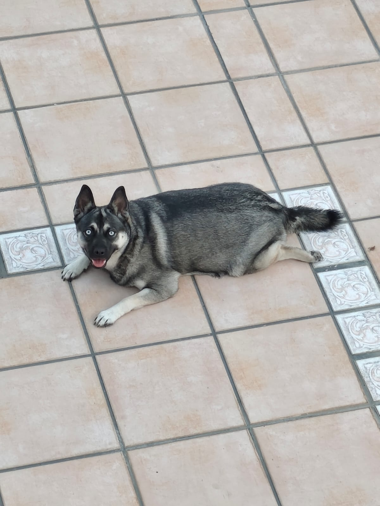
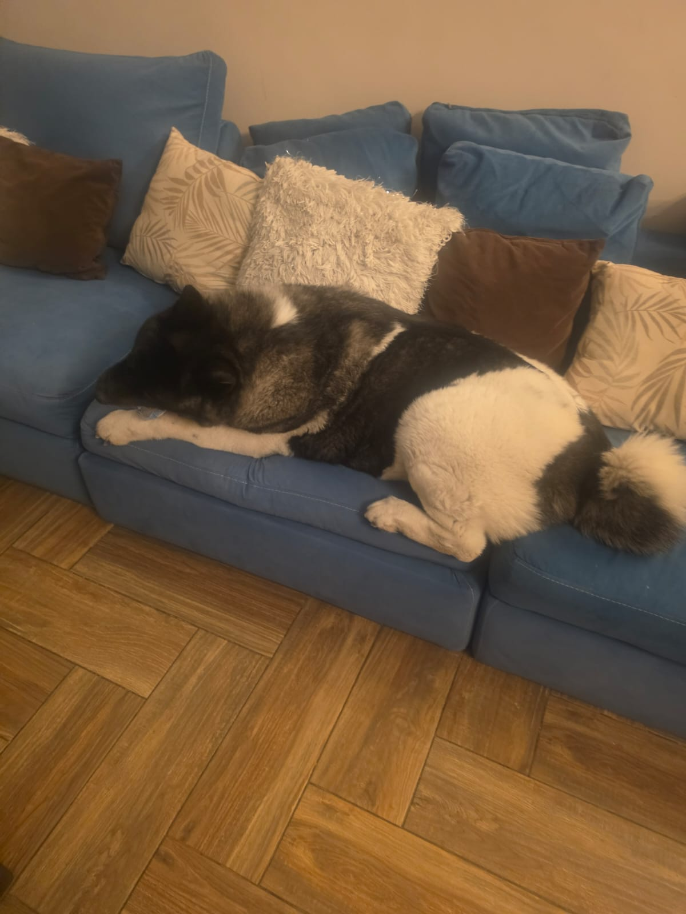
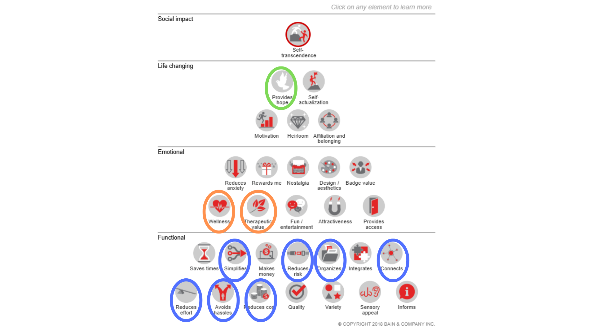
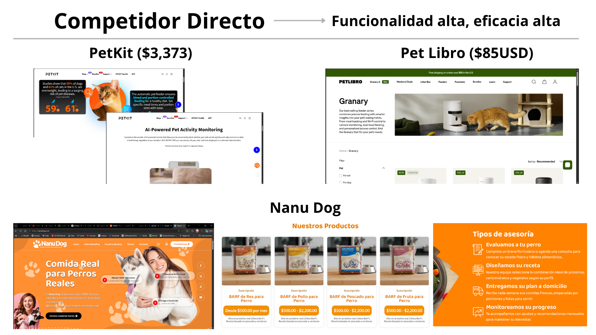
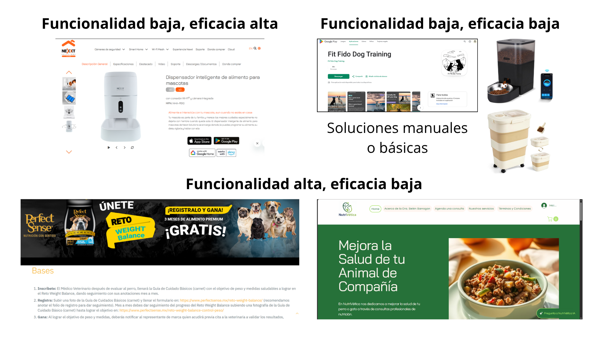
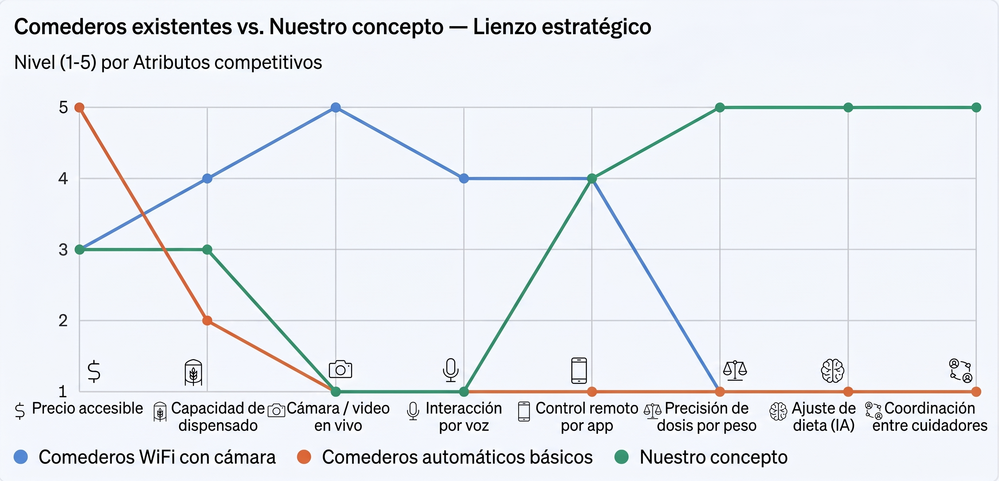

B1: Entrevistas
Se le realizaron las preguntas a 3 dueños de perros que sufren obesidad. Los resultados y transcripciones se encuentran a continuación.
Transcripciones de las entrevistas
Primera entrevista

| Pregunta | Respuesta |
|---|---|
| 1. Cuéntame cómo es un día normal de tu perro, desde que alguien lo alimenta por primera vez hasta la noche — ¿quién hace qué? | Somos tres personas en casa. Realmente solo comen una vez al día, a las 5:00 p. m., pero su porción suele ser bastante generosa. Llevan una dieta BARF, es decir, les damos vegetales crudos (como calabaza o zanahoria), carbohidratos (arroz o avena) y proteína (huevo o pollo hervido). Una persona se encarga de cocinar el huevo o el pollo, y otra se encarga de darles de comer a todos nuestros perros en general, incluyendo a la perrita de este caso. Si alguno no puede, otra persona toma su lugar. En ese momento también se les cambia el agua. |
| 2. ¿Cuándo fue la última vez que te enteraste de que tu perro había subido de peso o que algo no andaba bien con su alimentación? ¿Qué hiciste en ese momento? | Es cruza de dos razas muy distintas: la mamá es husky y el papá es pug. Por eso no tenemos un parámetro claro de cuál es su peso ideal o si está excedida. Sin embargo, nos damos cuenta de que tiene sobrepeso por su grasa corporal y por cómo se ve visualmente. Además, cargarla cuesta bastante trabajo y suele lastimar la espalda o los brazos a quien lo hace. |
| 3. ¿Con qué frecuencia hablas con tu papá o mamá sobre cómo está comiendo el perro? Cuéntame de la última vez que pasó. ¿Cómo calculas las porciones de alimento que le das a tu perrito? | La frecuencia con la que hablamos de cómo están comiendo es casi nula, porque sabemos que comen bien. Al principio, cuando empezamos a tener más perros (son 4), hablábamos para buscar opciones económicas y nutritivas. Les variamos los vegetales (zanahoria, calabaza, chayote, papa, brócoli), las proteínas y los carbohidratos. Para las porciones, tomando como referencia un plato o contenedor de un litro, calculamos aproximadamente un cuarto de litro. Sin embargo, tratamos de darle un poco más de lo habitual porque come bastante y compite por la comida con otro perro. Para equilibrarlo, le agregamos una proporción mayor de vegetales. |
| 4. ¿Qué es lo más difícil de coordinar la comida del perro entre las distintas personas que lo cuidan? | Realmente no es nada difícil. Ya tenemos muy bien coordinada la hora exacta de alimentarlos (las 5:00 p. m.) y lo que van a comer. Almacenamos su comida en el refrigerador en contenedores especiales únicamente para ellos, separando los carbohidratos, la proteína y los vegetales. Las croquetas también las tenemos aparte. Como ya tenemos todo asimilado, la rutina fluye bien. |
| 5. ¿Has intentado alguna vez llevar algún control de cuánto come el perro (una app, anotarlo, preguntar seguido)? ¿Qué pasó, lo siguieron usando o lo dejaron? ¿Has llevado a tu perrito al veterinario por el tema de su peso, en caso de ser así, qué les recomendó que hicieran para bajarlo de peso? | No llevamos un control formal porque no tenemos un indicador exacto de cuál debería ser su peso ideal al ser una cruza de razas. Sin embargo, a simple vista sí está bastante subida de peso. Anteriormente, hace unos meses, salíamos a pasear e hicimos que la mayoría de nuestros perros bajaran de peso. Actualmente no hemos podido organizarnos para salir a pasear, pero tratamos de que bajen su energía con juegos, interacciones, abrazos o simplemente hablando con ellos. |
| 6. La última vez que el veterinario les dijo algo sobre el peso o la salud del perro, ¿qué hicieron después? | La última vez que la llevamos a registrar su peso, pesaba 3.9 kg (o 3.900 kg). Sin embargo, ese registro fue hace aproximadamente un año y desde entonces no la hemos vuelto a pesar ni le hemos dado seguimiento formal al tema. |
| 7. ¿Cuánto gastas hoy al mes en cosas relacionadas con la alimentación o salud de tu perro (croquetas especiales, consultas, lo que sea)? ¿Y cuánto tiempo le dedicas a estar al pendiente de eso? | Gastamos un aproximado de $1,500 MXN. Como preparamos y almacenamos la comida para que rinda entre una semana y una semana y media, el costo llega a variar un poco dependiendo del precio actual del pollo, huevo, vegetales y carbohidratos en el mercado, pero en promedio es esa cantidad. |
Segunda entrevista
| Pregunta | Respuesta Corregida |
|---|---|
| 1. Cuéntame cómo es un día normal de tu perro, desde que alguien lo alimenta por primera vez hasta la noche — ¿quién hace qué? | Nuestros tres cachorros suelen dormir juntos cerca de nuestra puerta. Se despiertan cuando nos escuchan entrar a la cocina y nos reciben con mucha alegría. Pasan el día en la casa y a veces duermen durante la tarde. Solo se les alimenta una vez al día, por las noches, dándoles una porción proporcional a su tamaño y al nivel de actividad que realizaron durante la jornada para que aguanten bien todo el día. |
| 2. ¿Cuándo fue la última vez que te enteraste de que tu perro había subido de peso o que algo no andaba bien con su alimentación? ¿Qué hiciste en ese momento? | Por lo general nuestros perros están saludables, pero notamos sobrepeso en una de ellas (Norina) porque el doctor nos lo dijo y visualmente era evidente. En su momento compramos un alimento especializado para el manejo de peso y cuidamos su alimentación durante unos 4 meses. Le mantuvimos su comida una vez por la noche, pero con porciones y croquetas más controladas, con lo que logró bajar de peso. Sin embargo, al ser un producto casi al doble de costo que un alimento convencional, tuvimos que regresar al alimento normal pero sirviéndole una cantidad menor. |
| 3. ¿Con qué frecuencia hablas con tu papá o mamá sobre cómo está comiendo el perro? Cuéntame de la última vez que pasó. ¿Cómo calculas las porciones de alimento que le das a tu perrito? | Estamos muy al pendiente de cómo se alimentan y de si tienen apetito o no. Si vemos que no quieren comer, los motivamos poniéndoles en el fondo del plato algo de comida humana (sopa o caldo) para cambiar el sabor. Incluso recientemente en la veterinaria nos ofrecieron un sazonador en polvo para croquetas. Calculamos las porciones según sus períodos y nivel de actividad: si hicieron mucho ejercicio o estuvieron muy activos, les servimos un poco más. Cuando entran en períodos de reproducción (como el macho), tienden a comer menos. |
| 4. ¿Qué es lo más difícil de coordinar la comida del perro entre las distintas personas que lo cuidan? | (Para esta pregunta, la respuesta se conecta directamente con la atención al horario y el apetito que gestionan en casa): Procuramos darles de comer siempre dentro del mismo horario. Sin embargo, si los vemos hambrientos o inquietos antes de tiempo, nos coordinamos para adelantarles un poco la comida. Lo importante para nosotros es estar al pendiente de que coman bien y que nunca falte el alimento en casa. |
| 5. ¿Has intentado alguna vez llevar algún control de cuánto come el perro (una app, anotarlo, preguntar seguido)? ¿Qué pasó, lo siguieron usando o lo dejaron? ¿Has llevado a tu perrito al veterinario por el tema de su peso, en caso de ser así, qué les recomendó que hicieran para bajarlo de peso? | No llevamos ningún registro formal de su alimentación (ni en apps ni en notas). Todo el control lo basamos en la observación permanente y diaria de los perros. Sobre el veterinario, cuando lo consultamos por el peso de Norina, nos recomendó cambiar a un alimento especial para control de peso. |
| 6. La última vez que el veterinario les dijo algo sobre el peso o la salud del perro, ¿qué hicieron después? | Una vez que el veterinario nos confirmó el sobrepeso, le cambiamos la dieta a un alimento para perros con obesidad. No obstante, como era un producto mucho más caro y difícil de conseguir, con el tiempo se lo eliminamos y volvimos al alimento convencional, ajustando la cantidad a una porción menor. |
| 7. ¿Cuánto gastas hoy al mes en cosas relacionadas con la alimentación o salud de tu perro (croquetas especiales, consultas, lo que sea)? ¿Y cuánto tiempo le dedicas a estar al pendiente de eso? | Un bulto de alimento rinde aproximadamente 3 semanas y nos cuesta $1,200 MXN. Adicionalmente, de vez en cuando gastamos en comprarles premios, como huesos u otros detalles. En cuanto al tiempo, le dedicamos atención constante todos los días para revisar sus horarios, observar su apetito y asegurarnos de que estén bien alimentados. |
Tercera entrevista

| Pregunta | Respuesta Corregida |
|---|---|
| 1. Cuéntame cómo es un día normal de tu perro, desde que alguien lo alimenta por primera vez hasta la noche — ¿quién hace qué? | Hobi (una Akita Americano de 8 años) se despierta temprano cuando yo o mis papás nos levantamos. Le dan de comer en la mañana, cerca de las 8:00 a. m. Casi siempre le sirven las chicas que nos ayudan en la casa, mi hermana, mi mamá o yo, dependiendo de quién se acuerde primero. Pasa el día en la casa y caminando por el jardín (tenemos un terreno amplio). Aunque ya no sale tanto a la calle por su edad y sobrepeso, dentro de casa sí se mantiene en constante movimiento. Por la noche, cuando es hora de cenar, quien esté disponible la despierta, pesa la porción exacta y le sirve. |
| 2. ¿Cuándo fue la última vez que te enteraste de que tu perro había subido de peso o que algo no andaba bien con su alimentación? ¿Qué hiciste en ese momento? | Hace como un mes nos dimos cuenta al llevarla al veterinario porque lloraba/aullaba con facilidad, como si la hubieran pisado. Ya sabíamos que tenía algo de sobrepeso por sus visitas al baño, pero en esta revisión nos diagnosticaron que desarrolló displasia de cadera (común en razas grandes). Por su edad y peso, una cirugía no era opción segura. ¿Qué hicimos?: Le dieron medicamentos para desinflamar la zona. Además, el veterinario nos ordenó ser muy estrictos con la dieta: le cambiamos la marca de croquetas y ahora le medimos la porción exacta con báscula (175 gramos por servida). Se le eliminó por completo la comida humana, pan y frutas que antes se le caían al piso o le daban. |
| 3. ¿Con qué frecuencia hablas con tu papá o mamá sobre cómo está comiendo el perro? Cuéntame de la última vez que pasó. ¿Cómo calculas las porciones de alimento que le das a tu perrito? | Hablamos del tema principalmente cuando vamos al veterinario y nos da un diagnóstico. En el día a día solo nos preguntamos de forma rápida si ya comió. Cálculo de porciones: Usamos una báscula para medir exactos 175 gramos de croquetas para la mañana y otros 175 gramos para la noche. Además, cambiamos la dinámica: antes se le dejaba el plato lleno todo el día; ahora, si no se acaba las croquetas en el momento, se le retira el plato para que no coma de más ni se las gane el otro perro. |
| 4. ¿Qué es lo más difícil de coordinar la comida del perro entre las distintas personas que lo cuidan? | Al principio era casi imposible coordinarnos. Pasaba muy seguido que nadie preguntaba si alguien ya le había dado de comer, así que terminaban alimentándola dos veces. Además, como el otro perrito es más mañoso, a veces ella se comía las croquetas del otro perro o se tropezaban las rutinas. Lo superamos al volvernos más conscientes: coordinamos bien quién le da, confirmamos si ya desayunó o cenó, y le retiramos el plato al otro perro para que Hobi no le robe alimento. |
| 5. ¿Has intentado alguna vez llevar algún control de cuánto come el perro (una app, anotarlo, preguntar seguido)? ¿Qué pasó, lo siguieron usando o lo dejaron? ¿Has llevado a tu perrito al veterinario por el tema de su peso, en caso de ser así, qué les recomendó que hicieran para bajarlo de peso? | No hemos usado apps ni registros escritos, solo la comunicación verbal en casa y el control estricto con la báscula al servirle. Sí la llevamos al veterinario debido a la displasia de cadera y al peso. Nos recomendó de manera urgente: bajar la porción a 175 g exactos por comida, eliminar los premios/comida de mesa, cambiar a croquetas de control de peso, retirarle el plato si no come en el momento y sacarla a paseos cortos de 15 minutos (sin forzarla si se cansa). |
| 6. La última vez que el veterinario les dijo algo sobre el peso o la salud del perro, ¿qué hicieron después? | Aplicamos al pie de la letra las indicaciones: compramos el nuevo alimento, empezamos a pesar cada porción en báscula, pusimos horarios para retirarle el plato si no se acaba la comida y evitamos que entre al área donde come el otro perro. También empezamos a sacarla al jardín o a paseos muy breves de 15 minutos para activarla de a poco sin lastimar sus caderas. |
| 7. ¿Cuánto gastas hoy al mes en cosas relacionadas con la alimentación o salud de tu perro (croquetas especiales, consultas, lo que sea)? ¿Y cuánto tiempo le dedicas a estar al pendiente de eso? | Mi hermana y mis papás se encargan de las compras, pero calculo que compramos un costal de croquetas de aproximadamente 10.8 kg (24 lbs) cada 2 semanas para los dos perros. Adicionalmente, se gastan alrededor de $300 MXN o un poco más cuando requiere refuerzo de medicamentos para la desinflamación articular. Tiempo dedicado: No toma mucho tiempo servirle, pero sí exige atención constante para verificar si alguien ya le dio de comer y para pesar las porciones en cada comida. |
Síntesis de Entrevistas
1. ¿Qué hipótesis pusieron a prueba?
La hipótesis central que se buscaba validar era la del insight ganador de la Semana 2:
"En hogares con múltiples cuidadores, el perro es sobrealimentado porque nadie sabe cuánto ya le dieron los demás — y esto ocurre especialmente en hogares multigeneracionales donde un adulto mayor cuida al perro mientras los hijos trabajan fuera."
Dentro de esta hipótesis general había tres sub-hipótesis específicas que las preguntas del guion buscaban probar:
- H1 (Coordinación): La falta de comunicación entre cuidadores causa sobrealimentación o duplicidad de comidas.
- H2 (Cálculo de porción): Los dueños calculan las porciones "a ojo" o de forma imprecisa, sin herramientas objetivas.
- H3 (Segmento comprador/usuario distintos): El adulto mayor es quien más tiempo pasa con el perro pero tiene menos herramientas para controlar su alimentación, y es el hijo adulto quien paga y se preocupa a distancia.
2. ¿Qué encontraron — confirmó, ajustó o pivotó?
| Hipótesis | Resultado | Evidencia |
|---|---|---|
| H1 — Falta de coordinación entre cuidadores | ✅ Confirmada (parcialmente) | El Entrevistado 3 la vivió directamente: duplicaban comidas por falta de comunicación. Los Entrevistados 1 y 2 la habían resuelto ya con rutinas manuales (horarios fijos, contenedores separados), lo que muestra que el problema existe pero es "resoluble" con disciplina, no necesariamente irresoluble sin tecnología. |
| H2 — Cálculo impreciso de porciones | 🔄 Ajustada | Solo el Entrevistado 3 usa báscula exacta (175g), y lo hace porque un veterinario se lo ordenó tras un diagnóstico grave (displasia de cadera), no de forma preventiva. Los otros dos calculan "a ojo" (un cuarto de litro, según actividad del día) y lo aceptan como normal — no lo viven como un dolor que buscan resolver, sino como parte de la rutina. |
| H3 — Segmento adulto mayor + hijo que paga a distancia | ❌ Pivotó | Ninguna de las tres entrevistas describe este patrón. En los tres casos hay varios adultos presentes y activos en la coordinación (papás, hermanos, empleada doméstica), no un adulto mayor aislado cuidando solo mientras otros trabajan fuera. El ángulo emocional "sabe que tu mamá y tu perro están bien mientras trabajas" no tiene respaldo en los datos primarios recolectados. |
Hallazgo no anticipado (fuera de las hipótesis originales): el problema más grave y mejor documentado (Hobi, displasia de cadera) no llegó por sobrepeso preventivo sino por una consecuencia médica ya manifestada, y la solución de la familia fue una báscula de cocina y disciplina manual — no una app ni ningún registro digital. Esto no estaba en el guion de hipótesis pero es el hallazgo más accionable de las tres entrevistas.
3. La cita textual más importante
"Al principio era casi imposible coordinarnos. Pasaba muy seguido que nadie preguntaba si alguien ya le había dado de comer, así que terminaban alimentándola dos veces."
— Entrevistado 3, sobre Hobi (Akita, 8 años, con displasia de cadera)
Es la cita más importante porque conecta, en una sola frase, el dolor funcional (duplicidad de comidas) con la consecuencia médica real y medible (displasia de cadera agravada por sobrepeso) — y viene de la familia que terminó con el protocolo más estricto (báscula, 175g exactos, retiro de plato), es decir, la que mejor ilustra qué se automatizaría con tu producto.
4. Qué cambió en el concepto (o por qué se mantuvo igual)
Se mantiene igual:
- El dolor central — sobrealimentación por falta de coordinación entre cuidadores — sigue siendo real y vale la pena resolverlo. La solución de "un solo punto de verdad físico" (el dispensador) para reemplazar la báscula y las preguntas verbales sigue siendo el mecanismo correcto.
- La idea de que el alimento convencional + porción exacta automatizada es más viable comercialmente que empujar alimento premium de control de peso (el Entrevistado 2 abandonó el alimento especial por costo — confirma tu insight de Semana 2 sobre por qué las dietas de prescripción fallan).
Cambia:
- El segmento se amplía y se corrige. Deja de ser "hogar multigeneracional, adulto mayor + hijo que paga a distancia" y pasa a ser "hogares con 2 o más cuidadores del perro", sin importar la composición etaria — hermanos, padres, personal doméstico. Esto es un cambio de segmento, no solo de mensaje: afecta a quién le harías el research de precio y a quién le vendes.
- El gancho de venta emocional debe reformularse. En lugar de "sabe que tu mamá y tu perro están bien mientras trabajas" (sin respaldo en los datos), el dolor que sí aparece consistentemente en las tres entrevistas es más cercano a "que nadie en casa tenga que preguntar si ya le dieron de comer" — un dolor de coordinación doméstica, no de cuidado intergeneracional a distancia.
- Se agrega una restricción de diseño que no estaba en el insight original: el mecanismo de tolva a granel + sensor de peso solo sirve para croquetas secas. La dieta BARF del Entrevistado 1 queda fuera del alcance del MVP a menos que se rediseñe el hardware — esto había que decidirlo explícitamente como un "no" del alcance, no dejarlo implícito.
- Se confirma que el componente app es secundario, no protagonista. Ninguna familia usó apps ni registros digitales, ni siquiera bajo indicación veterinaria estricta. Esto refuerza (no contradice) lo que ya habías anticipado en Semana 2 — "el artefacto, no la app, es la puerta de entrada" — pero ahora tienes evidencia directa de que las familias resuelven todo con la báscula de cocina y comunicación verbal, así que el dispensador tiene que ser más simple que eso para justificar el reemplazo.
Freedom to Operate
Se puede ver el resumen del FTO al final de la semana 3: https://1570danib.github.io/Project-Faro2/assignments/weeks/w03/week3.html
B2: Segmento de mercado
💬 Prompt creado por mí
Actúa como especialista en investigación de mercados, segmentación de mercados, comportamiento del consumidor, identificación de nichos y validación de oportunidades de negocio.
Voy a proporcionarte el contexto completo de un proyecto. Tu objetivo será analizar y acotar el segmento de mercado, así como determinar si dentro de él existe un nicho de mercado más específico y comercialmente relevante.
No quiero que simplemente confirmes el segmento que proponemos. Quiero que lo cuestiones, contrastes y refines utilizando las características reales del problema y de la solución.
CONTEXTO DEL PROYECTO
El proyecto consiste en desarrollar un dispensador automático de alimento para perros integrado con un sistema de inteligencia artificial, diseñado para ayudar a controlar la alimentación y la porción diaria del perro.
El concepto actual se denomina "Activación en el Mostrador". La propuesta consiste en que el comedero sea configurado antes de llegar al hogar, directamente en una veterinaria o tienda de mascotas.
Durante la compra:
- El vendedor escanea el código de barras del costal de alimento.
- Se pesa al perro utilizando la báscula disponible en la tienda o veterinaria.
- Estos datos se utilizan para determinar la porción diaria.
- El dispositivo sale de la tienda previamente configurado.
- El usuario únicamente necesita conectarlo en casa.
- El dispositivo está diseñado para no requerir pantalla ni botones de configuración en el hogar.
La lógica de esta propuesta es reducir el problema de configuración y evitar que los distintos cuidadores tengan que decidir cuánto alimento darle al perro.
PROBLEMA IDENTIFICADO
El segmento inicialmente identificado es: Hijas e hijos adultos de 25–45 años, que viven en zonas urbanas de México, trabajan tiempo completo fuera de casa y viven con su padre o madre adulto mayor, quien convive con el perro durante gran parte del día.
El problema específico identificado es la sobrealimentación involuntaria causada por múltiples cuidadores.
La situación observada es:
- El hijo o hija alimenta al perro.
- El padre o madre puede volver a alimentarlo.
- Una empleada doméstica puede darle alimento.
- Cada persona puede desconocer cuánto alimento recibió anteriormente.
- Nadie necesariamente pretende sobrealimentar al perro.
- Sin embargo, las cantidades se acumulan durante el día.
- El problema puede hacerse evidente meses después mediante aumento de peso o un diagnóstico veterinario.
Por lo tanto, el problema no es únicamente: "Mi perro tiene sobrepeso." El problema específico planteado es: "No puedo tener certeza de cuánto alimento recibe mi perro cuando varias personas lo alimentan durante el día."
La ganancia principal buscada es: Tener la certeza de que el perro recibe la porción correcta todos los días, independientemente de quién esté presente o quién cuide al perro.
Otras ganancias identificadas:
- Poder cuidar al perro aunque el dueño trabaje fuera de casa.
- Reducir la carga mental de preguntar cuánto comió.
- Evitar discusiones o correcciones hacia padres u otros cuidadores.
- Reducir el riesgo de problemas de salud asociados con el sobrepeso.
- Evitar gastos veterinarios relacionados con problemas derivados del sobrepeso.
- Facilitar el cuidado del perro dentro de hogares donde participan varias personas.
WORKAROUNDS ACTUALES
Actualmente se identificaron como posibles soluciones:
- Aplicaciones de conteo de calorías.
- Comederos programables convencionales.
- Recomendaciones verbales del veterinario.
- Dietas de prescripción.
- Control manual de las porciones.
- Comunicación entre los diferentes miembros del hogar.
Sin embargo, las soluciones actuales presentan posibles limitaciones:
- Las aplicaciones dependen de que alguien registre correctamente lo que come el perro.
- Los comederos convencionales controlan horarios y cantidades, pero no necesariamente determinan la porción adecuada.
- Las recomendaciones veterinarias no garantizan que se cumplan diariamente.
- Las dietas especializadas pueden representar un gasto considerable.
- El control manual requiere coordinación entre varias personas.
SEGMENTO ACTUAL
El segmento actualmente propuesto es: Adultos de 25–45 años, hijos o hijas de un adulto mayor, residentes en zonas urbanas de México, que trabajan tiempo completo fuera de casa, viven con su padre o madre y tienen un perro cuya alimentación es compartida entre varios cuidadores.
Sin embargo, este segmento es solamente una hipótesis inicial. Tu tarea es determinar si:
- Este segmento está correctamente delimitado.
- Es demasiado amplio.
- Es demasiado específico.
- Existen variables más importantes que deberían utilizarse.
- Existe un subsegmento más atractivo.
- Existe un nicho todavía más específico.
MODELO DE SEGMENTACIÓN OBLIGATORIO
Analiza el mercado utilizando exactamente estas cuatro dimensiones:
1. DEMOGRÁFICA — Considera: edad, género, etapa de vida, ocupación, tipo de hogar, composición familiar, número de integrantes, presencia de adultos mayores, ubicación geográfica, tamaño de ciudad, nivel educativo, cualquier otra variable relevante. Determina especialmente si "25–45 años" y "vivir con un adulto mayor" son variables fundamentales para el mercado o simplemente características circunstanciales del problema observado.
2. CONDUCTUAL (especial atención) — Analiza: tenencia de perros, número de perros, perros con sobrepeso u obesidad, perros cuya alimentación depende de varias personas, frecuencia con la que diferentes personas alimentan al perro, nivel de control de las porciones, existencia de reglas familiares, problemas previos de sobrealimentación, intentos anteriores de controlar el peso, visitas al veterinario, uso de dietas especializadas, uso de comederos automáticos, uso de apps para mascotas, uso de tecnología para monitorear mascotas, nivel de preocupación, frecuencia de compra de alimento, búsqueda activa de soluciones, frustración con soluciones actuales, disposición a cambiar hábitos, comportamiento de compra. Determina qué comportamientos diferencian realmente al cliente potencial. Presta especial atención a: número de personas que alimentan regularmente al perro — evalúa si esta variable podría ser más útil para segmentar que la edad o la presencia de un adulto mayor.
3. PSICOGRÁFICA — Analiza: estilo de vida, valores, relación emocional con la mascota, percepción del perro dentro de la familia, nivel de responsabilidad percibida, preocupación por la salud del perro, interés por prevenir problemas de salud, interés por tecnología, apertura hacia IA, interés por automatización, necesidad de control, búsqueda de comodidad, carga mental relacionada con el cuidado, frustración por no poder supervisar directamente, confianza o desconfianza hacia recomendaciones automatizadas, sensibilidad hacia productos que simplifiquen la convivencia familiar. Determina si existe un perfil psicográfico común entre quienes experimentarían con mayor intensidad este problema.
4. ECONÓMICA — Analiza: nivel de ingresos, ingreso disponible, gasto mensual en mascotas, gasto en alimento, gasto veterinario, gasto en accesorios y tecnología, capacidad de adquirir un dispositivo tecnológico, sensibilidad al precio, disposición a pagar, posible disposición a pagar mensualmente, posibilidad de pagar una suscripción. No inventes rangos económicos; si no hay información suficiente, indícalo como variable pendiente de validación.
CRUCE DE LAS CUATRO DIMENSIONES — Determina cuáles variables son: Esenciales (sin ellas el problema desaparece o cambia significativamente), Importantes (aumentan la probabilidad pero no son indispensables), Secundarias (describen al consumidor pero no son determinantes), Posiblemente irrelevantes (no diferencian el mercado).
COMPARACIÓN DEL SEGMENTO ACTUAL VS. SEGMENTOS ALTERNATIVOS — Considera segmentar por: edad, hogar multigeneracional, número de cuidadores del perro, número de personas que alimentan al perro, dueños que trabajan fuera de casa, perros con sobrepeso, dueños preocupados por el peso, dueños que ya intentaron controlar el peso, usuarios de tecnología para mascotas, dueños que buscan prevención, o combinaciones. No asumas que estas alternativas son mejores; analízalas.
IDENTIFICACIÓN DEL NICHO — Un nicho debe compartir: un problema concreto, una necesidad clara, características comunes, comportamientos similares, motivaciones similares, capacidad o disposición económica, y una razón clara para preferir esta solución frente a alternativas. No consideres que un grupo es un nicho únicamente porque es pequeño o específico. (Se incluye un ejemplo ilustrativo de embudo: Mercado amplio → Dueños de perros; Segmento → Dueños preocupados por el peso; Subsegmento → Dueños con problemas para controlar porciones; Posible nicho → Personas que trabajan fuera de casa y cuyo perro es alimentado por varias personas durante el día — aclarando que es solo un ejemplo del proceso, no una conclusión predeterminada.)
CRITERIO PARTICULARMENTE IMPORTANTE — Hipótesis inicial a analizar críticamente: el factor determinante no sería necesariamente que el hogar sea multigeneracional, sino que existen múltiples personas alimentando al mismo perro sin coordinación suficiente. Analizar si el mismo problema podría existir en: parejas que trabajan fuera de casa, familias con adolescentes, casas con varios adultos, personas que comparten vivienda, hogares con empleados domésticos, familias donde diferentes personas cuidan al perro, personas que dejan al perro al cuidado de terceros durante el día. Determinar si esto implica que el segmento debe ampliarse, modificarse o dividirse.
CLIENTE, USUARIO Y BENEFICIARIO — Distinguir explícitamente: Comprador (¿quién decide y paga?), Usuario directo (¿quién interactúa físicamente con el dispositivo?), Usuario indirecto (¿quién se beneficia sin configurarlo?), Beneficiario final (el perro). Explicar cómo esta estructura influye en la segmentación.
RESULTADO FINAL — Entregar el análisis en este orden: 1. Mercado general. 2. Segmentación demográfica (tabla). 3. Segmentación conductual (tabla). 4. Segmentación psicográfica (tabla). 5. Segmentación económica (tabla). 6. Cruce de variables (tabla: Nivel | Demográfica | Conductual | Psicográfica | Económica | Relación con el problema, desde mercado amplio hasta grupo más específico). 7. Evaluación del segmento actual. 8. Segmento refinado (Quién + dónde + qué comportamiento + qué problema + qué necesidad). 9. Nicho potencial (o indicarlo como pendiente de validación). 10. Perfil del cliente ideal. 11. Hipótesis a validar (5–10, ordenadas por riesgo, sin puntuación numérica). 12. Recomendación metodológica para Semana 3 (preguntas abiertas/neutrales, sin mencionar la solución, separadas por: problema, comportamiento de múltiples cuidadores, frecuencia, gravedad percibida, soluciones actuales, disposición a cambiar, disposición a pagar).
REGLAS: no confirmar el segmento solo porque el equipo lo propuso; cuestionarlo y buscar variables que expliquen mejor el problema; no confundir mercado/segmento/subsegmento/nicho; no inventar datos; diferenciar hechos, hipótesis e inferencias; indicar fuente si se usa información externa; no usar únicamente la obesidad canina como criterio (el problema central es la sobrealimentación no coordinada); determinar si el adulto mayor es variable esencial o solo un contexto; determinar si trabajar fuera de casa es esencial o solo intensifica el problema; evaluar el número de personas que alimentan al perro como posible variable conductual central; no hacer un segmento tan amplio que pierda relevancia ni tan pequeño que sea artificial; no presentar un nicho como hecho si requiere validación; presentar alternativas razonables si existen varias, explicando qué comprobar para diferenciarlas; el objetivo es la relación más clara entre problema, comportamiento, necesidad y propuesta de valor, no "lo que suene mejor"; mantener separado el problema general de obesidad canina del problema específico del proyecto; no hacer recomendaciones de producto ajenas a la segmentación solicitada. Terminar con: "Nuestro mercado objetivo está compuesto por…" y "Nuestro nicho potencial está compuesto por…" (o indicar explícitamente si la evidencia no permite definirlos con precisión).
Respuesta: Análisis de Segmentación de Mercado
Dispensador automático de alimento para perros con IA — "Activación en el Mostrador"
1. Mercado general
El proyecto pertenece al mercado de tecnología aplicada al cuidado de mascotas (pet-tech), específicamente al subsector de dispositivos automatizados de alimentación y control nutricional canino. Dentro de este mercado general, el proyecto no compite en "comederos programables" en general, sino en una categoría más estrecha: sistemas de dosificación pre-configurada que eliminan la necesidad de coordinación manual entre cuidadores.
Es importante separar dos mercados que suelen confundirse:
- Mercado de control de obesidad canina (dietas, apps de calorías, alimento de prescripción).
- Mercado de coordinación del cuidado entre múltiples personas (que es, según el propio proyecto, el problema central).
El proyecto vive en la intersección de ambos, pero el segundo es el que le da su diferenciación real.
2. Segmentación demográfica
| Variable | Importancia | Justificación |
|---|---|---|
| Edad del comprador (25–45) | Importante (no esencial) | Correlaciona con independencia económica y con ser la persona que gestiona la salud del perro, pero el problema (múltiples cuidadores) también ocurre en compradores de otras edades (parejas de 30–60, roommates de 20–35). No es la variable que causa el problema. |
| Convivencia con adulto mayor | Secundaria / contextual | Es uno de los contextos más visibles donde ocurre el problema, pero no es indispensable: el mismo patrón aparece en parejas, roommates u hogares con empleada doméstica. Tratarla como "contexto frecuente", no como variable definitoria. |
| Trabajar tiempo completo fuera de casa | Importante | Aumenta la intensidad del problema porque el comprador no puede supervisar directamente y depende de la coordinación con otros. No es esencial: alguien que trabaja desde casa pero delega la alimentación (pareja, empleada) puede enfrentar el mismo problema con menor frecuencia. |
| Tipo de hogar multigeneracional | Secundaria | Es un ejemplo de estructura donde ocurre el problema, no la causa del problema. |
| Número de adultos con acceso al perro (≥2) | Esencial | Sin al menos dos personas con acceso al perro, no puede existir el problema de sobrealimentación por falta de coordinación. |
| Ubicación geográfica (zona urbana, México) | Importante | Relevante para el canal de distribución (veterinarias/tiendas con báscula) y poder adquisitivo, pero no es causal del problema en sí mismo. |
| Tamaño de ciudad | Secundaria | Podría influir en la disponibilidad de puntos de venta con el servicio de "activación en mostrador", pero no es indispensable. |
| Nivel educativo | Pendiente de validación | No hay evidencia suficiente para establecer relación; podría correlacionar con apertura tecnológica pero sería una inferencia, no un hecho. |
Conclusión parcial: "25–45 años" y "vivir con un adulto mayor" son circunstancias frecuentes del problema observado, no variables fundamentales del mercado.
3. Segmentación conductual
Esta es, según la evidencia disponible, la dimensión con mayor poder explicativo.
| Variable | Importancia | Justificación |
|---|---|---|
| Número de personas que alimentan regularmente al perro (≥2) | Esencial | Es la variable que define si el problema puede existir o no. Con un solo cuidador, el problema desaparece por definición. |
| Ausencia de un sistema de registro/coordinación entre cuidadores | Esencial | Es la causa directa de la sobrealimentación involuntaria; sin esta ausencia de coordinación, aunque haya varios cuidadores, el problema no ocurriría. |
| Frustración por falta de certeza sobre cuánto comió el perro | Esencial | Es literalmente la definición del dolor (pain point) del proyecto. |
| Historial de sobrepeso o diagnóstico veterinario | Importante (no esencial) | Genera urgencia y es el disparador más común para buscar una solución, pero pueden existir compradores preventivos sin diagnóstico aún. |
| Frecuencia de visitas al veterinario | Importante (operativa) | Es el canal donde ocurre la "activación en mostrador"; crítico para el modelo de distribución, aunque no es causal del problema. |
| Compra de alimento en veterinaria/tienda física (vs. solo supermercado/online) | Importante (operativa) | Necesario para que el flujo de configuración en punto de venta propuesto funcione. |
| Uso previo de apps de conteo calórico o comederos programables | Importante | Señala un comprador "buscador activo" con frustración previa, más propenso a pagar por una solución superior. |
| Número de perros en el hogar | Secundaria | Puede complicar el problema pero no lo define. |
| Raza/tamaño del perro | Secundaria / irrelevante para segmentación del comprador | Relevante para el diseño del producto (tamaño del dispensador), no para definir al cliente. |
Hallazgo clave: el número de cuidadores que alimentan al perro tiene mayor poder de segmentación que la edad del comprador o la presencia de un adulto mayor, porque es la variable sin la cual el problema deja de existir.
4. Segmentación psicográfica
| Variable | Importancia | Justificación |
|---|---|---|
| Necesidad de certeza/control sobre el cuidado del perro | Esencial | Coincide exactamente con la ganancia principal declarada: "tener la certeza de que el perro recibe la porción correcta". |
| Carga mental por coordinar a varios cuidadores | Esencial | Coincide con la ganancia declarada de "reducir la carga mental de preguntar cuánto comió". |
| Percepción del perro como miembro de la familia ("pet parent") | Importante | Aumenta la disposición emocional y económica a invertir en su bienestar, pero no es exclusiva de este segmento. |
| Culpa/preocupación por no estar presente durante el día | Importante | Motivador emocional específico de quien trabaja fuera de casa y delega el cuidado. |
| Deseo de evitar conflictos o correcciones hacia otros cuidadores (especialmente un padre/madre) | Importante, pero contextual | Es una motivación real y diferenciada en el subcontexto multigeneracional (corregir a un padre es distinto a corregir a una pareja o roommate), pero no aplica igual a todos los hogares con múltiples cuidadores. |
| Apertura a tecnología/IA | Importante | Necesaria para la adopción, pero probablemente más alta en compradores jóvenes tech-savvy que en el estereotipo "hogar con adulto mayor". |
| Confianza en automatización sin supervisión (sin pantalla ni botones) | Importante para el diseño, no necesariamente para la segmentación del comprador | Esta característica del producto (sin configuración en casa) cobra especial sentido si el usuario directo en el hogar (ej. adulto mayor) tiene baja comodidad tecnológica. Es una variable relevante para el diseño de experiencia, aunque no defina por sí sola el segmento de mercado. |
5. Segmentación económica
| Variable | Importancia | Justificación |
|---|---|---|
| Gasto actual en alimento premium o dietas especiales | Importante | Proxy de disposición a invertir en la salud del perro. |
| Gasto veterinario recurrente asociado al peso | Importante | Si ya existe gasto por problemas derivados del sobrepeso, el valor percibido del producto (evitar gastos futuros) es mayor. |
| Nivel de ingresos del comprador | Pendiente de validación | No hay datos suficientes; no se debe inventar un rango. Es razonable suponer un perfil de ingreso medio-alto urbano dado que se trata de un dispositivo tecnológico, pero esto debe validarse. |
| Disposición a pagar por el dispositivo (pago único) | Pendiente de validación | No hay evidencia disponible. |
| Disposición a pagar una suscripción (si el modelo la contempla) | Pendiente de validación | No hay evidencia disponible; depende del modelo de negocio final. |
| Sensibilidad al precio | Pendiente de validación | Requiere investigación directa (Semana 3). |
6. Cruce de variables
| Nivel | Demográfica | Conductual | Psicográfica | Económica | Relación con el problema |
|---|---|---|---|---|---|
| Mercado amplio | Dueños de perros en zonas urbanas de México | Alimentan a su perro regularmente | Ven al perro como parte del hogar | Gasto variable en mascotas | Relación indirecta; el problema no está presente en todo este grupo |
| Segmento | Hogares con 2+ adultos con acceso al perro | El perro es alimentado por 2+ personas sin sistema de coordinación | Necesidad de certeza y control; carga mental por coordinar | Gasto en alimento/veterinario ya asumido | Relación directa: aquí es donde el problema puede existir |
| Subsegmento | Comprador que trabaja fuera de casa y no supervisa directamente | Delega la alimentación a otros cuidadores (familiar, pareja, empleada doméstica, adulto mayor) | Culpa/preocupación por ausencia; búsqueda activa de certeza remota | Ingreso suficiente para tecnología, pendiente de validar monto | El problema se intensifica por la ausencia física del comprador |
| Posible nicho | Comprador cuyo perro es pesado/evaluado en veterinaria o tienda de mascotas | Recibe (o ya tiene) señal de sobrepeso o recomendación de control de porción en punto de venta | Urgencia percibida por el diagnóstico o advertencia; disposición a actuar de inmediato | Ya gasta en soluciones parciales (dietas, apps, comederos programables) | Es el momento y perfil de mayor probabilidad de conversión, combinando urgencia + canal + comportamiento central |
7. Evaluación del segmento actual
Segmento propuesto: "Hijas e hijos adultos de 25–45 años, que trabajan tiempo completo fuera de casa, viven con un adulto mayor y tienen un perro alimentado por varias personas."
Bien sustentado:
- El elemento de "perro alimentado por varias personas" — es el núcleo real del problema y está bien identificado.
- "Trabajar fuera de casa" como amplificador de la necesidad de una solución automatizada.
Necesita validación:
- Que el hogar con adulto mayor sea efectivamente el contexto predominante donde ocurre el problema (vs. parejas, roommates, hogares con empleada doméstica).
- Que el rango 25–45 años sea el que concentra a los compradores reales, y no un supuesto arbitrario.
- El nivel de ingreso y disposición a pagar, actualmente sin datos.
Podría estar limitando innecesariamente el mercado:
- Anclar el segmento a "adulto mayor en casa" excluye, sin justificación demostrada, a otros hogares con el mismo problema central (parejas que trabajan, hogares con empleada doméstica, roommates, familias con adolescentes). Si la causa real es "múltiples cuidadores sin coordinación", el mercado direccionable es probablemente más amplio que el segmento actual.
8. Segmento refinado
Quién: El adulto responsable de la salud del perro (comprador y tomador de decisión), que comparte el cuidado y la alimentación del perro con al menos otro cuidador en el hogar (pareja, familiar, adulto mayor, empleada doméstica u otro).
Dónde: Zonas urbanas de México, con acceso a veterinarias o tiendas de mascotas que puedan ofrecer el servicio de "activación en mostrador".
Qué comportamiento tiene: El perro es alimentado regularmente por dos o más personas sin un sistema compartido de registro o control de porciones.
Qué problema experimenta: Incertidumbre sobre la cantidad total de alimento que el perro recibe al día, lo que puede derivar en sobrealimentación no intencional.
Qué necesidad busca resolver: Tener la certeza de que el perro recibe la porción correcta cada día, sin depender de la coordinación activa y constante entre todos los cuidadores.
Nota: este segmento es más amplio que el original en la dimensión demográfica (no restringido a "adulto mayor en casa"), pero igual de específico —o más— en la dimensión conductual, que es la que realmente importa.
9. Nicho potencial
Nicho potencial — pendiente de validación (no es un hecho confirmado):
Compradores cuyo perro ya fue señalado (por un veterinario, por una báscula en tienda, o por observación propia) como candidato a control de peso o porción, y que se encuentran físicamente en el punto de venta (veterinaria o tienda de mascotas) en el momento de la compra de alimento — contexto en el cual el flujo de "Activación en el Mostrador" puede ejecutarse — y cuyo hogar tiene más de un cuidador regular del perro.
Este nicho combina tres elementos con evidencia razonable de relación con el problema:
- Urgencia (señal o diagnóstico de sobrepeso/riesgo).
- Viabilidad de canal (el punto de venta permite la configuración sin fricción).
- Comportamiento central (múltiples cuidadores sin coordinación).
Lo que falta validar: tamaño real de este grupo, si las veterinarias/tiendas están dispuestas a operar el flujo propuesto, y si la urgencia del diagnóstico efectivamente acelera la decisión de compra frente a otras alternativas más baratas.
10. Perfil del cliente ideal
- Demográfico: Adulto urbano en México, con capacidad económica para adquirir tecnología orientada al cuidado de mascotas; edad y estructura del hogar variables, no determinantes.
- Comportamiento: Comparte la alimentación del perro con al menos otra persona en el hogar; ha comprado alimento o llevado al perro a una veterinaria/tienda recientemente; probablemente ya intentó alguna solución parcial (app, comedero programable, indicaciones verbales).
- Psicografía: Percibe al perro como parte de la familia; siente la necesidad de tener control y certeza sobre su cuidado aunque no esté presente todo el día; experimenta carga mental por coordinar a otros cuidadores; está abierto a la automatización como forma de simplificar la convivencia familiar.
- Situación económica: Ya destina presupuesto recurrente a alimento y/o veterinario (monto exacto pendiente de validar).
- Problema: No tiene certeza de cuánto alimento recibe su perro cuando varias personas participan en su cuidado.
- Motivación: Prevenir el sobrepeso y sus consecuencias de salud/costo, sin tener que supervisar o coordinar activamente a todos los involucrados.
- Solución actual: Comunicación verbal entre cuidadores, control manual, o apps/comederos que dependen de que alguien registre correctamente.
- Frustración: Las soluciones actuales dependen de la memoria o buena voluntad de terceros, y el problema solo se hace evidente cuando ya es un hecho consumado (aumento de peso).
- Beneficio esperado: Certeza automática de la porción correcta, independientemente de quién esté presente en el hogar.
11. Hipótesis a validar (ordenadas por riesgo para el proyecto)
- El número de cuidadores que alimentan al perro es la variable central del problema — más que la edad del comprador o la convivencia con un adulto mayor. Si esta hipótesis es falsa, el segmento completo debe replantearse.
- La incertidumbre sobre cuánto comió el perro es percibida como un dolor real y frecuente, no solo como un inconveniente menor tolerable.
- Las veterinarias y tiendas de mascotas están dispuestas y son operativamente capaces de ejecutar el flujo de "Activación en el Mostrador" (pesar al perro, escanear el costal, configurar el dispositivo).
- El hogar multigeneracional es uno de varios contextos igualmente frecuentes, y no necesariamente el dominante frente a parejas, roommates u hogares con empleada doméstica.
- Existe disposición a pagar por un dispositivo con IA frente a alternativas más económicas (comedero programable simple, control manual).
- El diseño "sin pantalla ni botones en casa" resuelve una fricción real para el cuidador con menor comodidad tecnológica (frecuentemente, aunque no exclusivamente, un adulto mayor).
- El punto de venta (veterinaria/tienda) es un canal de distribución viable y escalable, no solo conceptualmente atractivo.
- El comprador que decide y paga coincide (o no) con quien físicamente activa el dispositivo en tienda — podría ser el hijo/a, el propio adulto mayor, o incluso sugerido por el veterinario.
- La frecuencia del problema (sobrealimentación acumulada) es significativa en la vida diaria, y no un evento raro o excepcional.
- Existe disposición a un modelo de suscripción (si el negocio lo contempla) frente a preferencia por pago único.
12. Recomendación metodológica para Semana 3
Sobre el problema:
- "Cuéntame cómo se decide actualmente cuánto alimento recibe tu perro durante un día normal."
- "¿Quién en tu casa participa en darle de comer al perro a lo largo del día?"
Sobre el comportamiento de múltiples cuidadores:
- "Cuando alguien más le da de comer a tu perro, ¿cómo se enteran los demás de que ya comió?"
- "¿Ha pasado que más de una persona le dé alimento el mismo día sin saber que el otro ya lo había hecho?"
Sobre la frecuencia del problema:
- "¿Con qué frecuencia distintas personas le dan de comer a tu perro en una semana típica?"
Sobre la gravedad percibida:
- "¿Cómo te enteraste, si fue el caso, de que tu perro había subido de peso?"
- "¿Qué tan preocupado/a estás actualmente por el peso o la alimentación de tu perro?"
Sobre las soluciones actuales:
- "¿Qué has intentado para controlar cuánto come tu perro?"
- "¿Cómo le explicas a otras personas en casa cuánto debe comer el perro?"
Sobre la disposición a cambiar:
- "Si pudieras cambiar algo sobre cómo se alimenta a tu perro en tu casa, ¿qué sería?"
Sobre la disposición a pagar:
- "¿Qué sueles gastar mensualmente en el cuidado de tu perro (alimento, veterinario, accesorios)?"
- "¿Has considerado alguna vez algún producto o servicio que te ayude a controlar mejor su alimentación? ¿Cuál?"
Conclusión
Nuestro mercado objetivo está compuesto por dueños de perros en zonas urbanas de México cuya alimentación diaria es compartida entre dos o más cuidadores sin un sistema de coordinación, y que buscan tener certeza sobre la porción correcta sin depender de la comunicación constante entre todos los involucrados.
Nuestro nicho potencial está compuesto por compradores cuyo perro ha recibido una señal o diagnóstico de riesgo de sobrepeso y que se encuentran en el punto de venta (veterinaria o tienda de mascotas) en el momento de la compra de alimento — sin embargo, este nicho aún requiere validación en cuanto a su tamaño real, la viabilidad operativa del canal y la disposición a pagar, por lo que debe tratarse como hipótesis de trabajo para la investigación de la Semana 3, no como una conclusión definitiva.
Prompt del profe (original)
Actúa como un investigador de mercado con especialización en segmentación de clientes para negocios de producto digital-físico en mercados emergentes latinoamericanos. Tu metodología combina datos demográficos verificables con análisis conductual y psicográfico basado en comportamiento observable — nunca en suposiciones sobre actitudes o valores generales. Cuando el equipo no tiene evidencia de una capa, lo señalas directamente en lugar de rellenar con hipótesis no marcadas. Un perfil honesto con huecos es más útil que uno completo con datos inventados.
Somos emprendedores en México desarrollando un negocio que combina una aplicación con IA, un artefacto físico inteligente y una página web de venta. Hemos hecho entrevistas de validación:
INSIGHTS DE ENTREVISTAS (semana 3): [pegar síntesis de entrevistas — incluir citas textuales]
SEGMENTO HIPÓTESIS DEL PAIN-GAIN MAP (semana 2): [pegar segmento identificado]
OPORTUNIDAD EN UNA ORACIÓN: [pegar la oportunidad del Pain-Gain Map]
Construye el perfil de segmento accionable en cuatro capas. Para cada dato indica si es VERIFICADO (viene de entrevistas o fuentes reales) o HIPÓTESIS (razonado pero sin confirmar). Si una capa no tiene evidencia suficiente, indícalo — no la inventes.
FORMATO DE SALIDA:
════════════════════════════════════════════════════════
PERFIL DE SEGMENTO ACCIONABLE
════════════════════════════════════════════════════════
CAPA 1 — DEMOGRÁFICA
¿Quién es con suficiente detalle para encontrarlo?
· [dato] → VERIFICADO / HIPÓTESIS
CAPA 2 — CONDUCTUAL
¿Qué hace hoy para resolver el problema — proceso exacto, frecuencia, herramientas, workarounds?
· [dato] → VERIFICADO / HIPÓTESIS
CAPA 3 — PSICOGRÁFICA
¿Qué le preocupa en sus propias palabras? ¿Qué lo motivaría a cambiar de solución?
· [dato o cita textual] → VERIFICADO / HIPÓTESIS
CAPA 4 — ECONÓMICA
¿Cuánto le cuesta el problema hoy? ¿Cuánto podría pagar? ¿Quién decide la compra?
· [dato] → VERIFICADO / HIPÓTESIS
────────────────────────────────────────────────────────
NIVEL DE CONOCIMIENTO DEL SEGMENTO:
Capas con mayoría VERIFICADA: [cuáles]
Capas con mayoría de HIPÓTESIS: [cuáles — agenda de investigación]
HIPÓTESIS CRÍTICAS SIN VERIFICAR:
[Las 2–3 suposiciones sin confirmar que más impactan la viabilidad del negocio]
PERFIL EN UNA ORACIÓN:
[El segmento completo en una oración específica y concreta — si no puede escribirse con datos verificados, señalarlo]
════════════════════════════════════════════════════════
Respuesta
Antes de la tabla, una aclaración necesaria: como no hay entrevistas, absolutamente todo lo que sigue es HIPÓTESIS, no hay ningún dato VERIFICADO. Voy a ejecutar el prompt tal como lo pediste, pero esto significa que la Capa 3 (psicográfica) prácticamente no puede llenarse — el prompt exige citas textuales o comportamiento observado, y sin entrevistas no tengo ninguna de las dos cosas. Prefiero mostrarte ese hueco vacío a inventar una cita que suene creíble.
════════════════════════════════════════════════════════
PERFIL DE SEGMENTO ACCIONABLE
════════════════════════════════════════════════════════
CAPA 1 — DEMOGRÁFICA
¿Quién es con suficiente detalle para encontrarlo?
- Adultos de 25–45 años, hijas/hijos de un adulto mayor → HIPÓTESIS
- Residen en zonas urbanas de México → HIPÓTESIS
- Trabajan tiempo completo fuera de casa → HIPÓTESIS
- Su padre o madre (adulto mayor) vive en el mismo hogar → HIPÓTESIS
- Cuentan con ingreso, tarjeta y hábito de compra digital → HIPÓTESIS
(Ninguno de estos datos proviene de una entrevista real; todos vienen del Pain-Gain Map, es decir, son un razonamiento del equipo, no evidencia de campo.)
CAPA 2 — CONDUCTUAL
¿Qué hace hoy para resolver el problema — proceso exacto, frecuencia, herramientas, workarounds?
- Coordina verbalmente con el padre/madre u otros cuidadores cuánto alimento darle al perro → HIPÓTESIS
- Podría usar apps de conteo calórico, comederos programables convencionales o dietas de prescripción como workaround → HIPÓTESIS
- Se entera del problema (sobrepeso) semanas o meses después, típicamente en el veterinario → HIPÓTESIS
(Estos son workarounds plausibles identificados en el análisis de segmentación previo, pero ninguno fue confirmado por un usuario real diciendo "así es como lo hago yo". No sabemos el proceso exacto, ni la frecuencia real, ni qué tan seguido falla la coordinación.)
CAPA 3 — PSICOGRÁFICA
¿Qué le preocupa en sus propias palabras? ¿Qué lo motivaría a cambiar de solución?
- Sin evidencia suficiente.
No hay ninguna cita textual ni observación de comportamiento disponible. Todo lo que podría escribir aquí (preocupación por el bienestar del perro, ansiedad de cuidar a distancia a un padre mayor, culpa, deseo de evitar conflictos con el padre/madre) proviene únicamente del razonamiento del equipo plasmado en la "oportunidad en una oración" — no de la boca de un cliente real. Marcar esto como hipótesis general sería engañoso porque ni siquiera es una hipótesis derivada de observación indirecta: es una narrativa de producto sin ningún contacto con el segmento. Esta capa queda vacía, pendiente por completo de investigación primaria.
CAPA 4 — ECONÓMICA
¿Cuánto le cuesta el problema hoy? ¿Cuánto podría pagar? ¿Quién decide la compra?
- El hijo/a adulto es quien decide y paga (tiene el ingreso y la tarjeta) → HIPÓTESIS
- El costo actual del problema (gasto veterinario, alimento de prescripción, tiempo/desgaste emocional) → sin evidencia, no estimable
- Disposición a pagar por app + dispositivo con IA → sin evidencia, no estimable
- Preferencia entre pago único vs. suscripción → sin evidencia, no estimable
────────────────────────────────────────────────────────
NIVEL DE CONOCIMIENTO DEL SEGMENTO:
Capas con mayoría VERIFICADA: ninguna.
Capas con mayoría de HIPÓTESIS: Demográfica, Conductual y Económica (razonadas pero no confirmadas).
Capa sin evidencia utilizable en absoluto: Psicográfica — esta es la más urgente en la agenda de investigación, porque además es la que sostiene emocionalmente toda la "oportunidad en una oración" (la idea de "tranquilidad" y "ansiedad de cuidar a distancia").
HIPÓTESIS CRÍTICAS SIN VERIFICAR:
- Que la "ansiedad de cuidar a un padre/madre mayor a distancia" sea un motivador emocional real para este comprador — hoy es puramente una narrativa construida por el equipo, sin ningún respaldo de campo. Es la hipótesis más riesgosa porque es el corazón de la propuesta de valor emocional del producto.
- Que exista disposición a pagar por una solución con IA frente a alternativas mucho más baratas (comedero programable simple, control manual, comunicación verbal). Sin esto, no hay negocio viable aunque el problema sea real.
- Que el adulto mayor efectivamente conviva con el perro la mayor parte del día y participe en alimentarlo sin coordinación con el hijo/a — es el supuesto conductual que sostiene todo el segmento, y no ha sido observado ni confirmado con ningún usuario real.
PERFIL EN UNA ORACIÓN:
No puede escribirse con datos verificados — actualmente cero de los datos del perfil provienen de entrevistas reales. La única oración posible es en modo hipótesis de trabajo:
"Hijas e hijos adultos de 25–45 años en zonas urbanas de México, que trabajan fuera de casa y cuyo padre/madre mayor convive con su perro la mayoría del día, podrían estar buscando (hipótesis sin confirmar) una forma de tener certeza sobre la alimentación del perro y tranquilidad respecto al cuidado de su padre/madre — pero esto no se ha corroborado con ningún cliente real."
════════════════════════════════════════════════════════
Este resultado en realidad es información valiosa por sí sola: te dice que la Semana 3 de entrevistas no es opcional, es la prioridad número uno antes de avanzar con diseño de producto o pricing, porque ahora mismo el negocio se sostiene sobre una narrativa emocional (Capa 3) que nadie ha confirmado con una sola persona real.
B3.1: Pirámide de Bain
Mi producto resuelve dos necesidades: Funcional, emocional y Life-Changing; y de ellas se derivan 10 valores.

Funcional
- Reduces effort (reduce esfuerzo): Automatiza el proceso de darle de comer a los perritos, además, evita pesar manualmente todos los días las porciones del perrito.
- Avoids hassles (evita fricciones): Elimina el problema de que "nadie preguntaba si alguien ya le había dado de comer" y terminaban duplicando comidas. Por lo cual, el comedero elimina esa fricción de coordinación entre cuidadores.
- Reduces risk (reduce riesgo): El sobrepeso puede derivar en enfermedades como displasia de cadera (como lo comenta el tercer entrevistado). Un dispositivo que previene la sobrealimentación reduce un riesgo de salud real y medible.
- Simplifies (simplifica): Convertir "báscula + memoria + comunicación verbal entre 3 personas" en "un solo aparato que ya sabe cuánto darle".
- Organizes (organiza): El comedero como "único punto de alimento" organiza información que hoy está repartida entre varias personas sin sistema, lo cual vuelve este hábito en una dieta calendarizada y además, programa los mejores momentos de consulta preventiva con el veterinario.
- Connects (conecta): Conecta a los distintos cuidadores con el mismo dato.
- Reduces cost (reduce costos): Elimina la duplicidad de comida, lo cual se traduce también en dinero. Además, a largo plazo, cuidar la alimentación del perrito ayuda a que tenga una mejor salud y con ello, prevenir enfermedades, las cuales suelen ser caras.
Emocional
- Therapeutic value (valor terapéutico): El producto está atado a manejo de dolor y salud articular, pues puede ayudar en reducir la angustia real de los perros que se quejan por el dolor que sienten por enfermedades como la displasia de cadera y la urgencia médica de resolverlo.
- Wellness (bienestar): El producto mejora el estado físico del perro.
Life-Changing
- Provides Hope (da esperanza): El sobrepeso no resuelto a tiempo puede derivar en enfermedades dolorosas y limitantes, como la displasia de cadera que ya enfrentó Hobi. Al automatizar el control de la porción diaria desde el día uno —antes de que el sobrepeso se convierta en un diagnóstico— el comedero le da al perro la posibilidad real de una vida más larga, más activa y sin ese tipo de dolor evitable.
- Affiliation/Belonging (vínculo/pertenencia): El comedero conecta a todos los cuidadores del perro —el hijo que trabaja fuera, el adulto mayor que convive con él todo el día, otros familiares— en un mismo sistema de cuidado compartido. Aunque no estén físicamente juntos, cada uno sabe que participa del bienestar del mismo perro y, indirectamente, del bienestar del familiar que lo cuida en casa — transformando el acto de alimentar al perro en un lazo que mantiene unida a la familia a distancia.
B3.2: Marco IDEO
Propuesta de valor: Wooffi: calidad de vida para tu compañero de vida. Que su peso deje de ser una preocupación en casa.
Va en función de: ¿Por qué te lo compran a ti y no a otros?
Oferta: Un dispensador automático de comida para perros con sensor de peso y app con IA que calcula la dieta.
INSIGHTFUL: ¿Qué necesitan tus clientes que nadie más está dando?
- Del mercado: los comederos automáticos que ya existen en México ($750–5,000 MXN, Coppel, Liverpool, Amazon) programan horarios y cantidades fijas, pero ninguno calcula la porción correcta según raza/edad/peso/objetivo del perro, y ninguno coordina a más de un cuidador.
- De las patentes: buscaste específicamente la combinación "sensor de peso + IA que ajusta dieta + validación veterinaria" en SIGA, LATIPAT y Lens.org, y no apareció ningún competidor que la resuelva junta. Lo más cercano (Pet Novations, Iams) resuelve logística de dispensación o monitoreo general, no el cálculo nutricional ajustado con ciclo veterinario.
- De las entrevistas: la familia de Hobi ya recibió una prescripción veterinaria exacta (175g, dos veces al día, retirar el plato si no se termina) y la están cumpliendo a mano, con una báscula de cocina, coordinándose verbalmente entre varias personas. Ese es el hueco real: existe el diagnóstico, existe la instrucción médica exacta, y no existe ningún producto —ni tuyo ni de la competencia— que la ejecute automáticamente sin depender de que un humano recuerde pesar y coordinarse.
El insight principal: Cuando un veterinario prescribe control estricto de porción en un hogar con más de un cuidador, hoy la única forma de cumplirlo es manual (báscula + memoria + comunicación verbal), y ningún comedero comercial ni patente existente automatiza esa ejecución exacta.
UNIQUE: ¿Qué pueden hacer ustedes que es difícil de replicar?
Lo que no tienen a favor:
- No tienen manufactura a escala, ni distribución, ni marca reconocida. Cualquiera de esas tres cosas la puede construir un competidor con más capital en menos tiempo que tú.
- El mecanismo técnico específico (tolva + sensor de peso + dispensación calibrada) no es exótico — es hardware relativamente estándar. Lo verdaderamente difícil de copiar no es el sensor, es el algoritmo de ajuste de dieta entrenado con lógica veterinaria real y el ciclo de validación con el veterinario. Si ese algoritmo termina siendo genérico (reglas simples de "gramos por kg de peso"), tu "Unique" se derrumba y cualquiera lo replica en un mes.
Conclusión honesta de este eje: tu unicidad real hoy no es el hardware, es la combinación de (a) haber hecho la investigación de campo que te dice cómo diseñarlo bien y (b) la intención de construir el motor de IA nutricional con respaldo real de lógica veterinaria, no una tabla de conversión simple. Si el proyecto se queda solo en "comedero con báscula programable", no tienes un "Unique" defendible — tienes una commodity con una capa de marketing.
TARGETED: ¿Quién será el cliente apasionado?
Quien NO es tu cliente ideal (aunque tenga el problema): los Entrevistados 1 y 2. Ambos notan el sobrepeso, lo mencionan, pero lo resuelven con ajustes de rutina sin urgencia real ni disposición a cambiar de herramienta — uno de ellos ni siquiera tiene un veterinario dándole seguimiento activo. Baja intensidad de dolor, baja probabilidad de pagar por un dispositivo.
Quien SÍ es tu cliente apasionado, con evidencia: hogares como el de Hobi — perro con diagnóstico veterinario activo que exige control de porción estricto, y más de una persona en casa involucrada en alimentarlo. Esta familia ya:
- Tiene una prescripción médica exacta que cumplir (175g, dos veces al día)
- Ya compró una báscula de cocina específicamente para esto
- Ya tuvo el problema de duplicidad de comidas que quiere resolver
- Ya gasta dinero recurrente en el problema (medicamento antiinflamatorio, alimento especial)
- Tiene el mayor costo de no resolverlo (dolor articular activo, no solo un riesgo futuro abstracto)
Es un segmento más angosto que "dueños de perro con sobrepeso en México" (35–42% de los perros), pero es el que tiene urgencia real, ya paga por soluciones imperfectas, y para quien tu producto no es un "nice to have" sino un reemplazo directo de algo que ya hacen a diario con esfuerzo.
La tensión que debes resolver, sin maquillarla: este segmento (hogares con diagnóstico veterinario activo + múltiples cuidadores) es probablemente bastante más pequeño que el número grande que citaste en la Semana 2 (>1 millón de hogares con perros con sobrepeso en LATAM). Ese número grande incluye a mucha gente como los Entrevistados 1 y 2, que no van a comprar esto pronto. Tu mercado direccionable real, con la evidencia que tienes hoy, es más chico de lo que tu investigación de mercado original sugería. Eso no mata el proyecto, pero si vas a presentar tamaño de mercado en algún reporte, no uses la cifra grande sin esta salvedad.
La propuesta de valor
OFERTA (lo que cualquiera puede copiar):
"Un dispensador automático de comida para perros con sensor de peso y app con IA que calcula la dieta."
PROPUESTA DE VALOR (por qué te lo compran a ti):
"Wooffi: calidad de vida para tu compañero de vida. Que su peso deje de ser una preocupación en casa."
Bloque 5.1 — Análisis competitivo y Blue Ocean
Tipos de competidores
💬 Prompt mío
Actúa como analista de mercado y competencia. Ayúdame a identificar y clasificar los competidores de mi proyecto en directos, indirectos y sustitutos.
Mi proyecto
Estoy desarrollando un dispensador automático de alimento para perros integrado con un modelo de IA, que ayuda a establecer una alimentación orientada al control y reducción del peso del perro.
El problema que buscamos resolver es la sobrealimentación del perro, especialmente en hogares donde varias personas lo alimentan y no existe un control de la cantidad total de alimento que recibe durante el día.
Nuestro usuario objetivo son hijas e hijos adultos de 25–45 años, en zonas urbanas de México, que trabajan tiempo completo fuera de casa y viven con un padre o madre adulto mayor que pasa gran parte del día con el perro.
Clasificación
Competidores directos: Mismo producto o solución funcionalmente equivalente + mismo problema + mismo usuario. Son soluciones que el usuario podría encontrar al realizar una búsqueda similar en Google.
Competidores indirectos: Producto, servicio o solución diferente, pero que resuelve el mismo problema. Incluye aquello que el usuario utiliza actualmente para solucionar el problema, aunque no sea la solución ideal.
Sustitutos: El usuario puede resolver el problema sin utilizar un producto similar al nuestro, mediante cambios de comportamiento, hábitos, organización o procesos manuales.
Lo que necesito
Investiga el mercado actual, principalmente en México, y encuentra ejemplos reales de cada categoría. Identifica, si existen suficientes: 5 competidores directos, 5 competidores indirectos, 5 sustitutos.
Preséntalos en una tabla: Empresa / solución | Categoría | ¿Qué ofrece? | ¿Qué problema resuelve? | ¿Por qué pertenece a esta categoría? | Precio aproximado | Fuente
Reglas
- No clasifiques una solución únicamente porque sea para mascotas.
- Justifica brevemente por qué pertenece a cada categoría.
- No confundas competidores indirectos con sustitutos.
- No inventes información; si un dato no está disponible, indícalo.
- Utiliza información vigente y fuentes confiables.
- Prioriza sitios oficiales y fuentes primarias.
- No utilices Wikipedia.
- Incluye los enlaces de las fuentes.
Al final, haz una breve conclusión identificando qué soluciones utiliza actualmente el usuario para resolver este problema y cuáles son las principales alternativas que mi proyecto tendría que considerar.
El contexto de mi proyecto es el siguiente:
Defensa de mi idea
Nota: el contenido de esta sección, tal como se recibió, retoma datos del hallazgo de "promesas de entrega que se incumplen" (delivery/pymes) en vez del concepto del comedero inteligente trabajado en el resto de la semana. Se conserva tal cual fue entregado, sin corregir ni resumir.
RESUMEN DEL PROYECTO
1. Verificación del problema
Segmento: Hijas e hijos adultos (25-45 años) en zonas urbanas de México, que trabajan tiempo completo fuera de casa y cuyo padre o madre (adulto mayor) vive en el mismo hogar y es quien convive con el perro la mayor parte del día. Son ellos quienes tienen el ingreso, la tarjeta y el hábito digital para comprar la solución, aunque no sean quienes alimentan al perro día a día.
Dolor: Pedidos se extravían, salen incompletos o repartidores no se presentan; el dueño se entera hasta que el cliente reclama
Workaround actual: Excel/libreta + múltiples grupos de WhatsApp + ubicación compartida (que repartidor olvida activar) + llamadas constantes para preguntar "¿dónde vas?"
Costo observable: 29-35% comisión a plataformas o 25% pedidos con problemas + 20-40 hrs/mes coordinación manual + pérdida de clientes (retención 42.3%).
2. Evidencia de que el problema es real
Señal 1: Pago por soluciones imperfectas
- Pymes pagan $1,800-$6,000 MXN/mes por CRM WhatsApp (ej: Aurora Inbox $1,800 MXN/mes) que no verifican entrega física [aurorainbox]
- Pagan 29-35% comisión a Rappi/Uber Eats/DiDi por trazabilidad completa pero pierden margen [polotab]
- Invierten $70,000-$120,000 MXN en software a medida para gestión de pedidos
Señal 2: Comunidades activas
- 8 grupos de WhatsApp de delivery activos y verificados
- Grupos Facebook emprendedores CDMX con miles de participantes
- Post concreto (mayo 2026): "Hola buenas noches alguien le ha pasado el repartidor nunca llegó... no se volvió a hacer ningún intento de entrega"
Señal 3: Frecuencia documentada
- 25% de envíos con problemas (retrasos, incorrectos, no entrega) [elhorizonte]
- Para negocio con 10-20 pedidos/día = 2-5 pedidos con problemas diarios
- Quejas diarias en redes: "El pedido va a llegar frío pero el repartidor caliente" (ago 2026)
3. Pasión por mi proyecto
Conexión con el problema: Es un problema que como pyme nosotros en nuestro negocio familiar también hemos llegado a tener. Sin embargo, para continuarlo posteriormente, me gustaría ver la adopción en el mercado.
Capacidad técnica concreta: Sensor: XIAO S3 con cámara y modelo de IA, pero no me sé el nombre. Y el protocolo me imagino que sería MQTT que es de los más sencillos.
4. Oportunidad
Oración de oportunidad: Existe una oportunidad para dueños de pymes en México que venden por WhatsApp/Instagram y hacen delivery propio que necesitan tener visibilidad en tiempo real del estado de sus pedidos sin depender de confirmaciones manuales porque hoy las soluciones existentes son o muy caras (software empresarial $35,000-$300,000 MXN) o muy básicas (Excel, WhatsApp) y no verifican que el proceso físico realmente avance
Falseable: El argumento de que sistemas así ya existen.
Tamaño de mercado: 70,000-100,000 negocios solo en México (65,000 restaurantes + 180,000 marcas D2C, con 40-50% haciendo delivery propio).
5. Deseabilidad validada
- ✅ 5 de 5 señales confirmadas: Pago actual, comunidades activas, frecuencia diaria, costo observable, workarounds documentados. Sin embargo, el concepto necesita ajuste antes de entrevistar: la evidencia confirma que el dolor de delivery mal trazado es real y costoso, pero no confirma que el usuario prefiera o necesite hardware sobre las soluciones de software puro que ya está pagando, así que las entrevistas de la próxima semana deben comparar explícitamente ambas opciones frente al usuario, no solo validar el dolor en abstracto.
- ✅ Mercado suficiente: 180,000+ marcas migraron a D2C en 2025-2026 para evitar retenciones de marketplaces
- ✅ Timing favorable: 15-30% de mipymes abandonó marketplaces en Q1 2026 por retenciones fiscales
Respuesta
Gracias por la información detallada de tu proyecto. A continuación presento el análisis competitivo estructurado según tus criterios, enfocado en el mercado mexicano y en soluciones reales disponibles actualmente.
Tabla de competidores y alternativas
| Empresa / solución | Categoría | ¿Qué ofrece? | ¿Qué problema resuelve? | ¿Por qué pertenece a esta categoría? | Precio aproximado | Fuente |
|---|---|---|---|---|---|---|
| PETKIT YumShare Solo 2 / Dual-Hopper | Directo | Comedero automático con cámara, app móvil, control de porciones programables (hasta 10 comidas/día), historial de alimentación y en modelos recientes reconocimiento facial con IA. | Automatiza la alimentación del perro con porciones medidas y registradas, evitando que varias personas lo alimenten sin control. | Mismo producto (comedero automático inteligente con app), mismo problema (sobrealimentación por falta de control de porciones), mismo usuario (dueños de perros en zonas urbanas que buscan control remoto). | $2,570–$4,580 MXN | [judge][adoptamiu] |
| PETLIBRO Air / Granary / RFID | Directo | Comederos automáticos WiFi con app, programación de 1–6 comidas/día, porciones ajustables (20 ml por porción), algunos con RFID para múltiples mascotas. | Controla horarios y cantidades de alimento dispensado, previene sobrealimentación y permite monitoreo remoto. | Producto funcionalmente equivalente: dispensador automático conectado con control de porciones y app para el mismo segmento de dueños ocupados. | $1,300–$5,700 MXN | [amazon.com][walmart.com][petlibro][theinspectaspect] |
| Nexxt Solutions NHA-P610 (Home Depot México) | Directo | Dispensador inteligente con cámara 1080p, WiFi, compatible con Alexa/Google, visión nocturna, audio bidireccional, control por app. | Permite ver y alimentar al perro remotamente con porciones controladas, evitando alimentación excesiva por múltiples personas. | Solución idéntica en función: hardware + app para control de alimentación con cámara y dispensación programada. | ~$3,499 MXN | [homedepot.com][youtube] |
| Steren Comedero Automático 4 kg (Liverpool) | Directo | Comedero automático programable con temporizador, capacidad 4 kg, dispensación por gravedad o tornillo. | Establece horarios fijos de alimentación y limita la cantidad disponible, reduciendo riesgo de sobrealimentación. | Producto en la misma categoría funcional: dispensador automático para control de alimentación, disponible en retail mexicano. | $1,790–$3,080 MXN | [liverpool.com] |
| Balimo / LOKOOY / LONGLIV (Amazon México) | Directo | Comederos WiFi con app, cámara, control de porciones, hasta 9–10 comidas/día, algunos con doble tazón. | Automatiza alimentación con control remoto y registro de consumo, previniendo que el perro sea alimentado en exceso por varias personas. | Mismo tipo de solución: hardware + app para control de porciones y horarios, disponible en mercado mexicano. | $699–$1,500 MXN | [debate.com][youtube][tuhogartech] |
| SureFeed Microchip Pet Feeder | Indirecto | Comedero que se abre solo para la mascota registrada (vía microchip implantado o collar RFID), disponible en versión Connect con app y registros de consumo. | Evita que otras mascotas o personas accedan al alimento; útil para dietas prescritas y control estricto de ingesta en hogares con múltiples animales. | Producto diferente (acceso restringido por identidad), pero resuelve el mismo problema de fondo: controlar quién y cuánto come la mascota. No es un dispensador automático programable estándar. | ~$3,300–$4,800 MXN (importado) | [petfeederpulse][aitakon][petfooddog] |
| Programas veterinarios de control de peso (ej. Perfect Sense Weight Balance, NutriVética, Clínica Animal) | Indirecto | Consultas de nutrición veterinaria, planes alimenticios personalizados, seguimiento mensual de peso y ajuste de raciones, a veces con incentivos (alimento gratis, descuentos). | Aborda la obesidad canina mediante supervisión profesional, cálculo calórico preciso y educación al dueño sobre porciones correctas. | Solución diferente (servicio profesional vs. hardware), pero resuelve el problema de sobrealimentación y control de peso mediante guía experta y seguimiento. | $1,200–$2,200 MXN consulta inicial; $700–$800 MXN seguimiento | [perfectsense][nutrivetica.com][cronoshare.com][clinicanimal] |
| Apps de registro nutricional (NutriPet, PupShape, Kibble Keeper, Fed?) | Indirecto | Aplicaciones móviles para registrar comidas, calcular calorías, monitorear peso, algunas con IA para recomendaciones de porciones según raza/edad/actividad. | Permite a los dueños llevar un registro manual de lo que come el perro y recibir recomendaciones de porciones, facilitando el control de peso. | Herramienta diferente (software sin hardware de dispensación), pero aborda el mismo problema: falta de visibilidad y control de la ingesta diaria. | Gratis – $400 MXN/año (suscripciones premium) | [apps.apple][play.google][apps.apple][apps.apple] |
| Alimentos veterinarios para control de peso (Purina Pro Plan OM, Perfect Sense) | Indirecto | Fórmulas bajas en calorías, altas en fibra/proteína, diseñadas para saciedad y pérdida de peso segura bajo supervisión veterinaria. | Reduce el riesgo de sobrealimentación al proporcionar menos calorías por volumen de alimento, facilitando el control de peso incluso si las porciones no son perfectas. | Solución complementaria: no controla la dispensación, pero mitiga el problema de obesidad mediante formulación nutricional específica. | $800–$1,500 MXN bolsa 3–7 kg (varía por marca) | [petsdream][perfectsense] |
| Hombli Smart Pet Feeder / Frienhund (disponibles vía e-commerce) | Directo* | Comederos inteligentes con app, control de porciones al gramo, programación múltiple, algunos con cámara. | Control preciso de raciones y horarios para evitar sobrealimentación. | Nota: Se incluyen como directos adicionales si se requiere ampliar la lista; funcionalmente equivalentes a PETKIT/PETLIBRO. | ~$2,000–$3,500 MXN (estimado, disponibilidad limitada en MX) | [hombli][afiliadospeludos] |
Sustitutos (soluciones sin producto similar)
| Solución | Categoría | ¿Qué ofrece? | ¿Qué problema resuelve? | ¿Por qué es un sustituto? | Costo aproximado | Fuente |
|---|---|---|---|---|---|---|
| Libreta/Excel + coordinación familiar | Sustituto | Registro manual en libreta, hoja de cálculo compartida o grupo de WhatsApp donde se anota cada vez que alguien alimenta al perro. | Evita la doble alimentación al hacer visible para todos los miembros del hogar cuándo y cuánto se ha alimentado al perro. | El usuario resuelve el problema mediante organización y comunicación, sin hardware ni app especializada. | Gratis | [animalstart] |
| Tupper/contenedores pre-porcionados | Sustituto | Recipientes individuales con la ración diaria o por comida, etiquetados por horario (mañana, tarde, noche). | Limita físicamente la cantidad de alimento disponible por toma, evitando que se sirva de más. | Cambio de hábito y proceso manual que previene sobrealimentación sin tecnología. | $100–$300 MXN (set de recipientes) | [centroveterinariosur][centroveterinariosur] |
| Regla familiar: "solo una persona alimenta" | Sustituto | Acuerdo explícito en el hogar de que únicamente el adulto mayor (o una persona designada) es responsable de alimentar al perro. | Elimina la causa raíz del problema: múltiples personas alimentando sin coordinación. | Solución organizacional/comportamental, sin producto. | Gratis | — |
| Alarmas/recordatorios en celular (Google Calendar, Alexa, Siri) | Sustituto | Recordatorios programados en el teléfono o asistente de voz para indicar cuándo alimentar al perro. | Asegura que las comidas ocurran en horarios fijos y reduce la probabilidad de olvidos o alimentaciones extra. | Herramienta genérica que apoya el hábito, pero no controla porciones automáticamente. | Gratis | [animalstart] |
| Báscula de cocina + medición manual | Sustituto | Uso de báscula digital para pesar el alimento antes de servirlo, siguiendo la guía del veterinario. | Garantiza precisión en las porciones servidas, evitando exceso por estimación visual. | Proceso manual que logra el mismo objetivo (porciones exactas) sin dispensador automático. | $150–$400 MXN | [trustmypets] |
Conclusión: qué usa actualmente el usuario y principales alternativas a considerar
Soluciones actuales del usuario objetivo:
El segmento descrito (hijos adultos 25–45 años que trabajan fuera de casa, con padres adultos mayores cuidando al perro) tiende a usar combinaciones de:
- Workarounds manuales: grupos de WhatsApp familiares, libretas o notas en el refrigerador para registrar cuándo se alimentó al perro.
- Contenedores pre-porcionados: dejar bolsitas o tuppers con la ración diaria lista para que el adulto mayor solo sirva.
- Reglas verbales: acuerdos como "mamá, solo dale de comer a las 8 am y 6 pm, yo reviso".
- Consultas veterinarias puntuales: cuando el perro ya presenta sobrepeso, acuden al veterinario para un plan de alimentación, pero sin herramientas de seguimiento continuo entre consultas. [cronoshare.com][clinicanimal]
Principales alternativas que tu proyecto debe considerar:
- Competidores directos establecidos: PETKIT y PETLIBRO ya tienen presencia en México vía Amazon, Walmart y tiendas especializadas, con precios desde $700 hasta $5,700 MXN y funciones similares (app, cámara, control de porciones). Tu diferenciador clave (IA para ajuste automático de porciones orientado a pérdida de peso) debe comunicarse claramente frente a estos. [judge][amazon.com][debate.com]
- Servicios veterinarios de control de peso: Muchos dueños ya pagan consultas de nutrición ($1,200–$2,200 MXN iniciales) y siguen planes manuales. Tu proyecto podría posicionarse como complemento a estos servicios, no como reemplazo, integrando reportes automáticos para el veterinario. [perfectsense][cronoshare.com]
- Apps de registro (sustitutos digitales): Apps gratuitas como NutriPet o PupShape permiten registrar comidas y peso sin hardware. Tu ventaja es la automatización (no depende de que el usuario recuerde registrar), pero debes justificar el costo del hardware frente a estas opciones. [apps.apple][apps.apple]
- Sustitutos de bajo costo: La solución más común actualmente es organizacional (acuerdos familiares + contenedores pre-porcionados). Tu propuesta de valor debe demostrar que el dispensador automático con IA reduce significativamente el riesgo de error humano y ofrece tranquilidad a los hijos que no están en casa todo el día. [centroveterinariosur][centroveterinariosur]
Recomendación estratégica:
Tu proyecto compite no solo contra otros dispensadores, sino contra la inercia de soluciones gratuitas (acuerdos familiares, tuppers) y servicios profesionales (veterinarios). Para ganar tracción:
- Posiciónate como herramienta de tranquilidad para los hijos adultos: "Sabrás exactamente cuánto comió tu perro hoy, aunque no estés en casa".
- Considera alianzas con veterinarias que ofrezcan tu dispositivo como parte de sus programas de control de peso.
- Destaca la IA como diferenciador real: ajuste automático de porciones basado en consumo registrado, no solo programación manual como PETKIT/PETLIBRO. [trustmypets][merca2]


Mapa de posicionamiento — eje "Ayuda eficaz para bajar de peso" vs. funcionalidades
AYUDA EFICAZ PARA BAJAR DE PESO
↑
|
NutriVética • | • Proyecto propuesto
Plan veterinario | IA + dispositivo
|
| • PETKIT YumShare
| cámara + app + porciones
|
| • PETLIBRO Granary
| app + programación
|
| • Perfect Sense
| alimento para control de peso
|
| • NanuDog
| dieta personalizada
|
Tuppers + raciones |
pre-porcionadas • | • Nexxt NHA-P610
| cámara + app
|
Libreta + WhatsApp • | • Steren
| temporizador
|
| • Apps de registro
| nutricional genéricas
|
| • Comedero automático básico
| sin app
|
+------------------------------------------------→
BAJAS FUNCIONALIDADES ALTAS
Nuevos competidores
[Pendiente — agrega aquí el contenido de "Nuevos competidores" y de "Blue Ocean" que faltó en el documento]
Prompt del profe
Actúa como analista de inteligencia competitiva especializado en mercados de producto digital-físico en América Latina. Tu metodología identifica tres capas de competidores con énfasis en actores reales y con tracción observable — no en listados genéricos de industria ni en productos que no han lanzado. Para cada competidor buscas su debilidad específica para el segmento del equipo, no sus debilidades generales.
Somos emprendedores en México con un negocio que combina una aplicación con IA, un artefacto físico inteligente y una página web de venta.
Concepto: [nombre + descripción en 2–3 oraciones]
Segmento objetivo: [perfil accionable — las 4 capas]
Dolor ⭐ que resolvemos: [del Pain-Gain Map]
Precio estimado: [rango en MXN]
Mapea los tres tipos con evidencia real y observable:
- DIRECTOS (mínimo 3): misma solución, mismo usuario
- INDIRECTOS (mínimo 3): diferente solución, mismo problema
- SUSTITUTOS (mínimo 2): cómo resuelve el usuario sin ningún producto similar al nuestro
Para cada competidor: nombre y descripción en 1 oración, dónde opera (México / LATAM / global), precio o modelo de ingresos si está documentado, su debilidad específica para nuestro segmento (no debilidades genéricas — específicas para este usuario).
FORMATO DE SALIDA:
════════════════════════════════════════════════════════
MAPA COMPETITIVO
Segmento: [nombre del segmento]
════════════════════════════════════════════════════════
DIRECTOS
1. [Nombre] — [descripción] — [opera en] — [precio] — [debilidad específica]
2.
3.
INDIRECTOS
1. [Nombre] — [descripción] — [opera en] — [precio] — [debilidad específica]
2.
3.
SUSTITUTOS
1. [Comportamiento sustituto] — [costo para el usuario en tiempo o dinero]
2.
────────────────────────────────────────────────────────
EL COMPETIDOR MÁS PELIGROSO:
[El indirecto o sustituto más arraigado en el comportamiento actual del usuario, por qué es difícil de desplazar, y qué tendría que ofrecer una solución nueva para que el usuario cambie de comportamiento]
════════════════════════════════════════════════════════
Resultado
Basado en la investigación realizada, presento el mapa competitivo estructurado según tu metodología:
════════════════════════════════════════════════════════
MAPA COMPETITIVO
Segmento: Hijos adultos (25-45 años) en zonas urbanas de México que trabajan tiempo completo fuera de casa, con padres adultos mayores cuidando al perro
════════════════════════════════════════════════════════
DIRECTOS
- PETKIT YumShare Solo 2 / Dual-Hopper — Comedero automático con cámara 1080p, app móvil, control de porciones (hasta 10 comidas/día) y reconocimiento facial con IA en modelos 2026 — Opera en México vía Amazon, Walmart y marketplace oficial — $2,570–$4,580 MXN ($149–$179 USD) — Debilidad específica: Su IA está optimizada para reconocimiento facial y frescura del alimento, no para ajuste automático de porciones orientado a pérdida de peso; el usuario debe calcular manualmente las calorías y programar porciones fijas, lo cual no resuelve el dolor de que el adulto mayor sirva "un poco más" por cariño o confusión. [chewy][frontdeskreview][homedepot.com][knowledgelib]
- PETLIBRO Granary 2 Vision — Comedero automático WiFi con cámara, programación de hasta 10 comidas/día, y en su versión 2026 añade reconocimiento de mascota con RFID y tracking de peso a nivel gramo — Opera en México vía Amazon México y sitio oficial con envío internacional — $1,600–$3,800 MXN ($79–$204 USD según modelo) — Debilidad específica: El tracking de peso es pasivo (registra cuánto se dispensó, no cuánto se comió realmente) y no integra recomendaciones de reducción calórica basadas en progreso; requiere que el dueño interprete los datos y ajuste manualmente, lo cual es fricción para hijos que no están en casa todo el día. [petkit.com][pettrackerlab][petlibro]
- Nexxt Solutions NHA-P610 (Home Depot México) — Dispensador inteligente con cámara 1080p, WiFi, compatible con Alexa/Google, visión nocturna y control por app — Opera exclusivamente en México a través de Home Depot — ~$3,499 MXN — Debilidad específica: No tiene funciones de IA ni análisis de hábitos alimenticios; es un dispensador remoto básico que depende 100% de que el usuario programe porciones correctas desde el inicio, sin aprendizaje ni ajuste automático, lo que lo hace vulnerable a errores de cálculo inicial que persisten por semanas.
INDIRECTOS
- NutriVética (Dra. Belén Barragán) — Servicio de consulta nutricional veterinaria en línea con planes personalizados, seguimiento continuo y ajustes de dieta para control de peso — Opera en México con consultas remotas — $1,200–$2,200 MXN consulta inicial + $700–$800 MXN por seguimiento — Debilidad específica: El seguimiento depende de que el dueño reporte manualmente el consumo y peso del perro entre consultas; no hay automatización ni visibilidad en tiempo real, lo cual es crítico cuando el adulto mayor no registra o subestima cuánto alimenta al perro diariamente. [topcrate][nutrivetica.com][nutrivetica.com]
- Perfect Sense Weight Balance — Programa mexicano de control de peso para perros que incluye alimento super premium bajo en calorías, guía nutricional y seguimiento mensual con incentivos (alimento gratis, descuentos) — Opera en México vía veterinarias asociadas y e-commerce — $800–$1,500 MXN mensual (alimento especializado) + consulta veterinaria — Debilidad específica: El programa asume que las porciones se miden correctamente en casa; no previene la sobrealimentación por múltiples cuidadores, solo mitiga el daño con fórmulas bajas en calorías, lo que puede generar falsa seguridad y progreso más lento. [nutrivetica.com][k-state]
- NanuDog — Servicio de comida natural personalizada para perros con planes nutricionales mensuales, dietas especiales y asesoría en línea, entrega a domicilio — Opera en México (CDMX y áreas metropolitanas) — $199–$399 MXN mensual según tamaño del perro — Debilidad específica: Las raciones vienen pre-porcionadas, pero una vez entregadas al hogar, cualquier persona (adulto mayor, visitas) puede añadir alimento extra fuera del plan; no hay control físico del acceso al alimento, solo confianza en el comportamiento del cuidador. [mypets]
SUSTITUTOS
- Libreta/Excel + grupo familiar de WhatsApp — Registro manual donde el adulto mayor anota o manda mensaje cada vez que alimenta al perro, con recordatorios verbales entre hermanos — Costo para el usuario: 15–20 minutos diarios de coordinación + 2–5 llamadas/semana de verificación + estrés por posibles olvidos o registros incompletos; costo monetario cercano a $0 pero costo emocional y de tiempo observable en patrones de quejas en grupos de dueños de mascotas.
- Contenedores pre-porcionados + regla "solo mamá alimenta" — Tuppers o bolsitas con la ración diaria separada por horario (mañana, tarde, noche) y acuerdo explícito de que únicamente el adulto mayor es responsable de servir — Costo para el usuario: $100–$300 MXN iniciales en recipientes + 30 minutos semanales preparando porciones + riesgo de que la regla se rompa en fines de semana, vacaciones o cuando el adulto mayor se enferma y otro familiar lo sustituye temporalmente. [nanudog]
────────────────────────────────────────────────────────
EL COMPETIDOR MÁS PELIGROSO:
La combinación "acuerdo familiar + contenedores pre-porcionados" es el competidor más arraigado y difícil de desplazar.
Por qué es difícil de desplazar:
- Costo marginal cero: No requiere inversión en hardware ni suscripciones; las familias ya tienen tuppers y WhatsApp.
- Inercia comportamental: El acuerdo verbal ("mamá, tú encárgate") es la solución por defecto que se establece desde el primer día que el perro llega al hogar; cambiarlo requiere admitir que el sistema actual falló (lo cual genera fricción familiar).
- Baja percepción de riesgo: La sobrealimentación es un problema de acumulación lenta (semanas o meses); las familias no lo identifican como "urgente" hasta que el veterinario diagnostica obesidad, momento en el cual ya hay resistencia al cambio ("siempre lo hemos hecho así").
- El adulto mayor como barrera: Introducir un dispositivo tecnológico puede percibirse como desconfianza hacia el cuidador principal ("¿me estás diciendo que no sé alimentar al perro?"), lo que genera resistencia emocional en el núcleo familiar. [nanudog]
Qué tendría que ofrecer una solución nueva para que el usuario cambie:
- Tranquilidad demostrable, no solo conveniencia: El hijo adulto debe poder decirle a su padre/madre: "Esto no es porque no confíe en ti, es para que ambos estemos tranquilos y el veterinario vea progreso real". El dispositivo debe generar reportes automáticos que se puedan compartir con el veterinario, validando la decisión como "cuidado profesional", no como vigilancia.
- Cero fricción para el adulto mayor: El dispensador debe ser tan simple como abrir un tupper; si requiere app, contraseñas o configuración compleja, el adulto mayor lo rechazará o lo usará incorrectamente. La IA debe trabajar en segundo plano sin requerir interacción del cuidador diario.
- ROI emocional claro: La propuesta de valor no es "control de porciones", es "evitar que tu perro desarrolle diabetes/artritis por sobrealimentación y tener que gastarte $5,000–$10,000 MXN en tratamientos veterinarios". El costo del dispositivo ($2,500–$4,000 MXN) debe compararse contra costos veterinarios futuros, no contra tuppers gratis. [nutrivetica.com][nanudog]
- Validación veterinaria integrada: Alianzas con clínicas que recomienden el dispositivo como parte de sus programas de control de peso, transformándolo de "gadget opcional" a "herramienta médica prescrita". Esto reduce la fricción familiar porque la autoridad viene del veterinario, no del hijo. [topcrate]
════════════════════════════════════════════════════════
Nota metodológica: Se excluyeron productos sin presencia observable en México (ej. Whisker Feeder-Robot, SureFeed sin distribuidor local confirmado) y listados genéricos sin evidencia de ventas o distribución activa en el mercado mexicano durante 2025–2026. Los precios en MXN se calcularon con tipo de cambio aproximado de 1 USD = 17–19 MXN según cotización septiembre 2026, más costos de importación cuando aplica. [petkit.com][petsapp][bestcatfeeder]
Fuerzas de Porter
💬 Prompt
Realiza un análisis de las 5 Fuerzas de Porter para MI PROYECTO utilizando toda la información que ya tienes precargada sobre él, su mercado, usuarios, problema, competidores y propuesta de valor.
Analiza:
- Poder de proveedores: identifica los principales proveedores, dependencia, facilidad para sustituirlos, costos de cambio y capacidad de influir en precios/calidad.
- Poder de clientes: identifica quién compra, quién usa y quién influye en la decisión. Analiza alternativas disponibles, sensibilidad al precio, facilidad de cambio y capacidad de negociación.
- Nuevos entrantes: analiza barreras de entrada como inversión, tecnología, conocimiento, regulación, marca, canales y economías de escala.
- Productos/servicios sustitutos — PROFUNDIZA ESPECIALMENTE AQUÍ: identifica todas las formas en que el usuario puede resolver la misma necesidad sin utilizar mi solución, incluyendo alternativas indirectas, soluciones manuales/caseras, apps, servicios y la opción de no hacer nada. Analiza precio, conveniencia, resultados y facilidad de cambio.
- Rivalidad entre competidores: analiza cantidad de competidores, similitud de ofertas, diferenciación y factores de competencia.
Para cada fuerza indica Baja, Media o Alta y justifica brevemente la conclusión.
Presenta primero una tabla: Fuerza | Nivel | Factores principales. Después desarrolla cada fuerza, dando mayor profundidad a proveedores, clientes y sustitutos.
IMPORTANTE: Adapta todo a MI PROYECTO; no uses ejemplos de otros sectores. No confundas competidores con sustitutos. No inventes información; si falta algún dato, indícalo. Explica cómo cada fuerza afecta la capacidad del proyecto para generar y capturar valor. Termina señalando cuáles son los principales retos estructurales identificados, sin proponer todavía estrategias.
Respuesta
Tabla resumen — 5 Fuerzas de Porter
| Fuerza | Nivel | Factores principales |
|---|---|---|
| Poder de proveedores | Baja-Media | Componentes (sensor de peso, microcontrolador, motor dispensador) son genéricos y con múltiples proveedores; el único punto de dependencia real sería si usas una API de IA externa específica. |
| Poder de clientes | Media-Alta | El comprador (dueño) tiene muchísimas alternativas de precio bajo en el mercado, es sensible al precio y el cambio entre opciones es casi sin costo. |
| Nuevos entrantes | Media | Barreras técnicas moderadas (hardware + IA), pero el ecosistema de comederos "inteligentes" ya es accesible y fabricantes existentes podrían copiar la función de peso rápidamente. |
| Productos sustitutos | Alta | Alimentación manual, comederos básicos sin IA, coordinación por WhatsApp/nota física, y "no hacer nada" son alternativas gratuitas o casi gratuitas y ya usadas hoy por los dueños. |
| Rivalidad entre competidores | Media | Varios competidores de comederos automáticos WiFi, ofertas parecidas entre sí (cámara, app, horarios), pero ninguno replica exactamente tu combinación (peso + IA + multi-cuidador). |
1. Poder de proveedores — Baja-Media
Tu producto depende de tres tipos de insumo: componentes electrónicos (sensor de peso/celda de carga, microcontrolador tipo Arduino/ESP32, motor para el mecanismo dispensador), materiales de fabricación (plástico food-grade, posiblemente impresión 3D dentro de Fab Academy) y servicios de software/IA (hosting de la app, motor de IA para el cálculo de dieta).
- Componentes y materiales: son productos de commodity con decenas de proveedores (tiendas de electrónica, Mercado Libre, AliExpress, el propio Fab Lab). El costo de cambio de proveedor es bajo y no hay dependencia de marca. Esto mantiene el poder de negociación de estos proveedores bajo.
- Servicios de IA/nube: aquí el poder puede subir si tu app depende de un único proveedor de modelo de IA (por ejemplo una sola API externa) sin arquitectura que permita sustituirlo fácilmente. No tengo información sobre qué proveedor de IA usarías, así que esto es un dato faltante — si ya elegiste un proveedor específico, valdría la pena registrarlo para evaluar mejor esta fuerza.
Efecto en la generación/captura de valor: al ser insumos de bajo costo de cambio, tu estructura de costos no está en riesgo por parte de proveedores; el mayor riesgo no es de poder de negociación sino de disponibilidad puntual de componentes (cadena de suministro), que es un riesgo operativo distinto al de poder de proveedor.
2. Poder de clientes — Media-Alta
Aquí conviene separar tres roles, como pediste:
- Quién compra (paga): el dueño del perro (o el hogar/familia).
- Quién usa: tanto el dueño como los demás cuidadores del perro (el problema que validaste en tus entrevistas apunta a que suele haber más de una persona alimentando al mismo animal).
- Quién influye: potencialmente un veterinario, si recomienda control de peso — pero no tengo datos de que hayas validado esta influencia directamente, así que lo marco como supuesto razonable, no un hecho confirmado.
Alternativas disponibles: son muchas y de fácil acceso — desde comederos automáticos genéricos hasta simplemente medir la comida a mano. Esto le da al comprador mucho poder de elección.
Sensibilidad al precio: en la categoría de "gadgets para mascotas", la evidencia de mercado (comederos como Cecotec o Prixton) muestra que el precio y las funciones visibles (cámara, app) son el criterio de decisión dominante — es una categoría sensible al precio.
Facilidad de cambio: alta. No existe costo de cambio real entre comederos (no hay datos ni suscripciones que atrapen al usuario, hasta donde se sabe de tu proyecto), lo que refuerza el poder del cliente.
Efecto en la generación/captura de valor: el poder del cliente presiona hacia abajo el precio que puedes cobrar y obliga a que el valor diferencial (dosificación por peso + IA + coordinación) sea muy visible y fácil de comunicar, porque si no se percibe claramente, el cliente comparará tu producto por precio contra alternativas más baratas.
3. Nuevos entrantes — Media
Barreras identificadas:
- Inversión/tecnología: moderada — requiere combinar hardware (sensor de peso, dispensador mecánico) con software de IA, lo cual no es trivial pero tampoco requiere una inversión de capital intensivo comparado con otras industrias.
- Conocimiento: moderado — se necesita conocimiento de electrónica, mecánica y modelos de IA aplicados a dietas caninas; esto reduce algo la facilidad de copia inmediata, pero no la elimina.
- Regulación: no tengo información de que existan regulaciones específicas (por ejemplo, sanitarias o de seguridad alimentaria) que documente tu proyecto — dato faltante a validar, sobre todo si el dispensador entra en contacto directo con el alimento.
- Marca y canales: baja barrera — no hay lealtad de marca establecida en esta categoría emergente, y los canales de venta (e-commerce, marketplaces) están abiertos a cualquier fabricante.
- Economías de escala: los fabricantes ya establecidos (Cecotec, Petkit, genéricos) tienen ventaja de escala en manufactura, lo que podría permitirles añadir un sensor de peso a bajo costo marginal si deciden copiar la función.
Efecto en la generación/captura de valor: el riesgo principal no es que entre un competidor nuevo "desde cero", sino que un fabricante ya establecido copie tu atributo diferenciador (peso + IA) aprovechando su escala y canal de distribución ya existente — esto limita cuánto tiempo puedes capturar valor exclusivo de tu diferenciación si no proteges o refuerzas continuamente esa ventaja.
4. Productos/servicios sustitutos — Alta (análisis profundo)
Esta es la fuerza más relevante para tu proyecto, porque la necesidad real que resuelves —controlar el peso/dieta del perro y coordinar la alimentación entre varios cuidadores— puede resolverse hoy sin ningún dispositivo inteligente, de varias formas:
| Sustituto | Precio | Conveniencia | Resultado logrado | Facilidad de cambio hacia él |
|---|---|---|---|---|
| Alimentación manual con taza medidora/báscula de cocina | Muy bajo (ya lo tienen) | Baja (requiere disciplina y memoria) | Variable, depende de la constancia humana | Ya es la opción por defecto de la mayoría |
| Comedero automático básico (sin peso ni IA) | Bajo-medio | Media (automatiza horario, no cantidad ajustada) | Parcial — resuelve horario, no ajuste de dieta | Alta, ya existen y son baratos |
| Coordinación manual entre cuidadores (grupo de WhatsApp, nota en el refrigerador, calendario compartido) | Gratis | Baja-media (depende de que todos revisen y actualicen) | Resuelve parcialmente el problema de coordinación que validaste, sin garantía | Muy alta, no requiere comprar nada |
| Consulta veterinaria + plan de dieta seguido manualmente | Medio-alto (costo de consulta) | Baja (requiere seguimiento manual posterior) | Alto si se sigue con disciplina, pero depende del humano | Media — requiere gasto puntual pero no recurrente |
| Apps genéricas de seguimiento de mascotas (sin hardware) | Gratis o bajo costo | Media (recordatorios, pero sin datos automáticos de peso) | Parcial, depende de registro manual | Alta |
| "No hacer nada" / seguir como hasta ahora | Gratis | N/A | Es justamente el statu quo que hoy predomina, según tus propias entrevistas | Es el punto de partida, no un cambio |
Por qué esta fuerza es Alta: casi todos estos sustitutos tienen costo cero o muy bajo, no requieren aprender nada nuevo, y ya son el comportamiento actual de la mayoría de los dueños de perros (tal como reflejaron tus entrevistas al identificar el problema, antes de que existiera tu solución). Esto significa que tu producto no compite solo contra otros comederos inteligentes, sino contra la inercia y el hábito gratuito ya instalado.
Efecto en la generación/captura de valor: esta es la fuerza que más limita tu capacidad de capturar valor, porque el "precio de referencia" psicológico del cliente no es el de otro comedero inteligente, sino el de "no gastar nada" o "usar lo que ya tengo". Tu propuesta de valor tiene que justificar el salto de gratis/barato a un producto de mayor precio, demostrando un resultado que la alternativa manual no logra de forma consistente (el ajuste de dieta por IA y la trazabilidad entre cuidadores).
5. Rivalidad entre competidores — Media
Es importante no confundir esta fuerza con la de sustitutos: aquí hablamos específicamente de otros comederos automáticos/inteligentes (Cecotec, Prixton, Petkit y genéricos similares), no de las alternativas manuales.
- Cantidad de competidores: moderada-alta, ya existen varias marcas establecidas en el segmento de comederos WiFi.
- Similitud de oferta: alta entre ellos mismos (cámara, app, horarios programables) — compiten principalmente por precio y diseño.
- Diferenciación de tu proyecto: alta frente a ellos, porque ninguno ofrece dosificación basada en peso real ni ajuste de dieta con IA ni coordinación multi-cuidador, según la información disponible.
- Factores de competencia: precio, capacidad, funciones de cámara/voz — terreno en el que, según tu propio análisis Blue Ocean, decidiste no competir directamente.
Efecto en la generación/captura de valor: la rivalidad directa es manejable porque tu propuesta no ataca el mismo terreno de comparación (cámara/voz/precio) donde los competidores ya luchan entre sí. El riesgo de rivalidad se activaría si alguno de ellos decide copiar tu atributo diferenciador (ver Nuevos entrantes).
Principales retos estructurales identificados
- La competencia más fuerte no son otros comederos, sino no comprar nada: la fuerza de sustitutos es la más alta de las cinco, y ataca directamente la razón de ser del producto (el hábito manual gratuito ya funciona "suficientemente bien" para muchos dueños).
- Poder de cliente elevado por baja fricción de cambio y alta sensibilidad al precio, en una categoría donde el comprador está acostumbrado a comparar por funciones visibles y precio, no por beneficios de salud a largo plazo.
- Ventaja diferenciadora vulnerable a la escala de fabricantes establecidos: la barrera de entrada no es alta, y quien ya tiene canal de distribución y manufactura (Cecotec, Petkit) podría replicar el sensor de peso con menor fricción que la que tú enfrentas para escalar producción.
- Dependencia no documentada de un proveedor de IA: falta información sobre si existe un único proveedor crítico para el motor de IA de la app; esto es un vacío de datos que conviene resolver, ya que podría convertirse en un punto de poder de proveedor no evaluado aquí.
B5.2: Blue Ocean
💬 Prompt
Realiza un análisis completo de Blue Ocean Strategy para MI PROYECTO utilizando exclusivamente la información que ya tienes precargada sobre mi proyecto, mercado, usuario, problema y competidores. NO utilices el ejemplo del sector agrícola como contenido; úsalo únicamente para entender la metodología y el formato que necesito.
1. ¿POR QUÉ EXISTE EL OCÉANO ROJO?
Explica brevemente, aplicado a mi sector: por qué actualmente existe competencia, en qué atributos compiten principalmente las alternativas existentes, qué aspectos de la oferta se han vuelto similares o estandarizados, qué oportunidad existe para dejar de competir bajo las mismas reglas.
2. MARCO DE LAS CUATRO ACCIONES
Aplica a mi proyecto las cuatro acciones de Blue Ocean:
ELIMINAR: ¿Qué atributos que los competidores ofrecen deberían eliminarse porque el usuario realmente no los valora o ya no los necesita?
REDUCIR: ¿Qué atributos deberían reducirse por debajo del estándar de la industria porque están sobredimensionados o no aportan suficiente valor al usuario?
INCREMENTAR: ¿Qué atributos deberían elevarse muy por encima del estándar de la industria porque el usuario los valora y actualmente están mal atendidos?
CREAR: ¿Qué atributos completamente nuevos debería introducir mi proyecto que actualmente no ofrece la industria y que generarían valor para el usuario?
Para cada acción, explica brevemente el razonamiento y relaciónalo directamente con las necesidades del usuario y los competidores identificados.
3. PROPUESTA DE VALOR BLUE OCEAN
Después del análisis, explica cuál sería la lógica de diferenciación de mi proyecto: qué atributos dejaría de priorizar, cuáles priorizaría, cuáles incorporaría de manera nueva, por qué esto genera una curva de valor diferente a la de los competidores. No te limites a decir que "es innovador": demuestra concretamente en qué cambia la propuesta.
4. LIENZO ESTRATÉGICO
Construye una tabla como la del ejemplo que te proporcioné. Identifica los 5–8 atributos competitivos más relevantes de mi sector, es decir, aquellos factores que realmente utilizan los usuarios para comparar las alternativas. Compara los principales tipos de competidores relevantes para mi proyecto y mi proyecto ("Nuestro concepto"). Asigna una puntuación de 1 a 5 para cada atributo (1 = nivel muy bajo, 5 = muy alto), justificada por la información disponible, no inventada arbitrariamente.
5. GENERA EL GRÁFICO
Genera una imagen del lienzo estratégico / curva de valor utilizando la tabla anterior: gráfico de líneas, eje X = atributos competitivos, eje Y = escala de 1 a 5, una línea diferente para cada tipo de competidor y otra para "Nuestro concepto", leyenda en la parte superior, título similar a "[Competidores] vs. Nuestro concepto", nombres de atributos claros en el eje X (divididos en dos líneas si son largos), diseño limpio, académico y profesional. NO copies los datos, nombres ni atributos del ejemplo agrícola; únicamente replica su estructura visual.
6. INTERPRETACIÓN FINAL
Después de la tabla y el gráfico, explica brevemente: en qué atributos nuestra curva se diferencia más de los competidores; qué atributos estamos deliberadamente reduciendo o eliminando y por qué; qué atributos estamos incrementando o creando; cómo estas decisiones modifican la propuesta de valor; cuál es la lógica del océano azul identificado para mi proyecto.
IMPORTANTE: Utiliza la información que ya tienes precargada sobre MI PROYECTO. No me pidas que vuelva a proporcionarte información que ya tienes. No uses el ejemplo agrícola como referencia de contenido. No inventes datos, competidores, necesidades o características que no puedan sustentarse con la información disponible. Diferencia claramente entre información conocida y cualquier supuesto que sea estrictamente necesario. El resultado debe estar completamente adaptado a mi sector y a mi proyecto.
Respuesta
Voy a construir el análisis usando lo que ya tengo registrado de tu proyecto (comedero inteligente para perros con sensor de peso + app con IA para ajuste de dieta, validado mediante entrevistas sobre el problema de coordinación entre cuidadores) y lo complemento con los competidores reales de comederos inteligentes WiFi que existen actualmente en el mercado (Cecotec Pumba 6000, Prixton Pet Feeder y productos similares tipo Petkit), que son el tipo de alternativa con la que tu proyecto compite directamente.
Donde uso un supuesto razonable (por ejemplo, precio o capacidad, que no están en tu documentación) lo marco explícitamente como tal.
1. ¿Por qué existe el océano rojo?
El mercado de comederos automáticos para mascotas ya está bastante poblado: existen múltiples marcas (Cecotec, Prixton, Petkit, y decenas de genéricos en Mercado Libre/Amazon) que compiten casi exclusivamente en conectividad WiFi + cámara + control remoto por app + capacidad en litros. Es una competencia por features de vigilancia y conveniencia (ver al perro, hablarle, programar horarios), no por resolver un problema de salud o de gestión del cuidado.
Esto ha llevado a que la oferta se estandarice: casi todos los comederos "inteligentes" del mercado tienen cámara HD, audio bidireccional y app con horarios programables — son casi indistinguibles entre sí, y compiten sobre todo por precio y diseño.
La oportunidad para dejar de competir bajo estas reglas está en que ninguno de estos productos resuelve realmente el problema de salud/peso del perro ni el problema de coordinación entre varios cuidadores, que es justo lo que validaste en tus entrevistas. Ahí es donde tu proyecto puede dejar de competir en el "océano rojo" de la vigilancia remota y crear una categoría nueva: alimentación dirigida por datos de salud y coordinada entre cuidadores.
2. Marco de las cuatro acciones
ELIMINAR
- Cámara HD y videollamada con la mascota: es el atributo estrella de marketing de la competencia, pero no resuelve el problema que validaste (coordinación entre cuidadores y control de peso). Es una función de entretenimiento, no de necesidad.
- Diseños decorativos/múltiples colores: no aporta valor al problema central que atacas.
REDUCIR
- Cantidad exagerada de comidas programables al día (algunos productos ofrecen hasta 10-15): la mayoría de dueños necesita pocas comidas, pero ajustadas correctamente en cantidad, no muchas opciones de horario.
- Complejidad de la app enfocada solo en "cuándo" alimentar: se reduce a lo mínimo necesario para dejar espacio de atención de usuario al "cuánto" y "por qué" (que es donde tu proyecto aporta valor).
INCREMENTAR
- Precisión de dosificación basada en el peso real del perro: ningún competidor la tiene; es el corazón de tu propuesta y responde directamente a la necesidad de salud/dieta que identificaste.
- Visibilidad y coordinación entre cuidadores (quién alimentó, cuánto, cuándo): mal atendido en toda la industria y es exactamente el problema que confirmaste en tus entrevistas con dueños de perros.
CREAR
- Ajuste automático de dieta con IA (subir, bajar o mantener peso): atributo inexistente en la competencia actual.
- Sistema de alertas de coordinación multi-cuidador (evitar doble alimentación, notificar cuando alguien ya alimentó al perro): resuelve directamente el problema de tu investigación de usuario.
- Seguimiento histórico de peso y tendencia de salud del perro a partir de los datos del sensor.
3. Propuesta de valor Blue Ocean
Tu proyecto dejaría de priorizar todo lo relacionado con vigilancia y entretenimiento (cámara, voz, diseño llamativo), que es donde la competencia gasta más recursos pero que no resuelve ningún problema real validado.
En cambio, priorizaría precisión de dosificación por peso y coordinación entre cuidadores, e incorporaría de manera completamente nueva el ajuste dietético automático con IA.
Esto no es "innovador" en abstracto: concretamente, mientras un Cecotec o un Prixton venden "controla a tu mascota desde el celular con cámara", tu comedero vendería "tu perro llega a su peso ideal automáticamente, y todos los que lo cuidan saben exactamente qué y cuánto ya comió". Es un cambio de categoría: de gadget de vigilancia a herramienta de salud canina colaborativa. La curva de valor resultante sube donde la industria está plana (dosificación por peso, coordinación) y baja donde la industria compite fuerte pero sin aportar valor real al problema (cámara, voz).
4. Lienzo estratégico
| Atributo | Comederos WiFi con cámara (tipo Cecotec/Prixton) | Comederos automáticos básicos (temporizador simple) | Nuestro concepto |
|---|---|---|---|
| Precio accesible* | 3 | 5 | 3 |
| Capacidad de dispensado* | 4 | 2 | 3 |
| Cámara / video en vivo | 5 | 1 | 1 |
| Interacción por voz/audio | 4 | 1 | 1 |
| Control remoto por app (horarios) | 4 | 1 | 4 |
| Precisión de dosis según peso real | 1 | 1 | 5 |
| Ajuste automático de dieta (IA) | 1 | 1 | 5 |
| Coordinación entre cuidadores | 1 | 1 | 5 |
*Precio y capacidad son supuestos razonables (no están documentados en tu proyecto); el resto se basa en las funciones reales de los productos existentes y en las características que sí tienes definidas para tu comedero.
6. Interpretación final
- Mayor diferenciación: tu curva se dispara respecto a la competencia en tres atributos consecutivos hacia la derecha del gráfico — precisión de dosis por peso, ajuste de dieta con IA y coordinación entre cuidadores. Ahí es donde ambos tipos de competidores están planos en el nivel más bajo.
- Lo que reducimos/eliminamos: cámara y voz caen deliberadamente al mínimo. No es una limitación técnica sino una decisión estratégica — son atributos de "vigilancia" que la industria ya sobre-atiende y que no resuelven el problema de salud/coordinación que validaste con usuarios reales.
- Lo que incrementamos/creamos: dosificación por peso real, IA de dieta y coordinación multi-cuidador — los tres puntos altos y exclusivos de tu curva.
- Cómo cambia la propuesta de valor: pasas de vender "control remoto y entretenimiento" a vender "salud del perro gestionada automáticamente y sin fricción entre quienes lo cuidan" — un problema que hoy nadie en el mercado atiende.
- Lógica del océano azul: en lugar de competir por quién tiene mejor cámara o más funciones de app, tu proyecto crea una categoría nueva — el comedero como herramienta de salud canina colaborativa — donde no compites contra Cecotec o Petkit en sus propios términos, sino que resuelves un problema que ellos ni siquiera están abordando.
Comparación IoT, app y Nuestro (tarea)

Reflexión
En la semana cuatro fue en la que más me llegué a pelear con la IA debido a que el mercado objetivo no fue exactamente el que yo tenía pensado y siento que lo dejó muy general. Además siento que no es como el mercado objetivo correcto ni la orientación correcta, ya que la IA me lo puso más en una función de: "los hijos quieren saber que sus perros al igual que sus padres están cuidados al mismo tiempo", lo cual considero que no es del todo cierto. No obstante, la IA se basó más por los datos estadísticos que Perplexity ya me había dado.
Siguiendo la misma línea, la semana fue un punto de inflexión: las entrevistas me obligaron a soltar una hipótesis de segmento pues ningún entrevistado la confirmó. El Marco IDEO también me ayudó a ver que mi ventaja real no es el sensor ni el motor, sino haber hecho la investigación de campo y construir un algoritmo con lógica veterinaria real.